Schulschach
Schulschach-AGs in Göttingen und Umgebung
Albani-Grundschule Göttingen: Thomas Post, Tel.:0551-51773709
Felix-Klein-Gymnasium Göttingen: Berthold Egbringhoff
Hainberg-Gymnasium Göttingen: Thomas Post, Tel.: 0551-51773709
Theodor-Heuss-Gymnasium Göttingen: Thomas Post, Tel.0551-51773709
Waldorf-Schule: Hr.Cohrs
Nächstes Turnier:
Di.05.Juli: Göttinger Schulschacheinzelmeisterschaften
WK I - WK IV
Platzierung | Name | WK | Punkte | Buchholz |
1. | Antal Mimkes | II | 6.5 | 34 |
2. | David Tulchynsky | III | 5.5 | 31.5 |
3. | Rita Nizamova | I | 5.5 | 31.5 |
4. | Pavel Mimkes | I | 5.5 | 31 |
5. | Rumo Schilling | II | 5.5 | 31 |
6. | S. Zimmermann | III | 5 | 31 |
7. | B. Zimmermann | II | 5 | 27.5 |
8. | Mark Tulchynsky | IV | 4.5 | 30 |
9. | Lukas Kalusa | IV | 4.5 | 25.5 |
10. | Lujas Kracke | II | 4.5 | 23 |
11. | Johannes Beier | IV | 4 | 27.5 |
12. | Matti Gargulla | II | 4 | 26.5 |
13. | David von Pruski | I | 4 | 25 |
14. | Felix Radenbach | IV | 4 | 24.5 |
15. | Oleh Aleinikov | IV | 4 | 24.5 |
16. | Jakob Kießling | III | 4 | 24.5 |
17. | Rafael A.Leon | IV | 4 | 24 |
18. | Luan Lesser | II | 4 | 23.5 |
19. | Kasimir Lenz | IV | 3.5 | 26.5 |
20. | Lennard Koch | III | 3.5 | 25.5 |
21. | Nils Matthießen | I | 3.5 | 22 |
22. | S. Jagtap Anil | III | 3 | 28.5 |
23. | Arthur Liebetanz | II | 3 | 24 |
24. | Samuel Rebuschat | I | 3 | 24 |
25. | Lennard Gündel | II | 3 | 22.5 |
26. | Friedrich Kusch | IV | 3 | 22.5 |
27. | Tiago Prieto | I | 3 | 21 |
28. | J. Schwedhelm | IV | 3 | 18 |
29. | Aaron Sandrock | II | 2.5 | 20 |
30. | Lea Köhler | IV | 2 | 21.5 |
31. | Aron Neef | IV | 2 | 19.5 |
32. | Jasper Tun | II | 2 | 19 |
33. | Jan Melzer | II | 2 | 19 |
34. | Mats Amos | II | 2 | 13.5 |
35. | Lasse Schüler | II | 1 | 19 |
36. | R.Ca.-Burger | II | 1 | 18 |
37. | Moritz Seidel | II | 1 | 15.5 |
WK Grundschulen
Platzierung | Name | Punkte | Buchholz |
1. | Felix Asendorf | 7 | 23.5 |
2. | Anna Radenbach | 5 | 26 |
3. | Tom Fricke | 4.5 | 25 |
4. | Darian Goldstein | 4 | 24 |
5. | Florian Wistuba | 3.5 | 25 |
6. | Arthur Siegesmund | 3.5 | 24.5 |
7. | Christian Beier | 3 | 25 |
8. | Valentin Kartachov | 3 | 24 |
9. | Mohammed Laabid | 1.5 | 22 |
Turnierchronik
Bezirksschulschachfinale in Bad Harzburg am 27./28.Januar.2020
WK Grundschule
Mannschafts-Rangliste: Stand nach der 7. Runde
Rang MNr Mannschaft TWZ Attr.S R V Man.Pkt. Brt.Pkt. Buchh
1. 3. 1 Adenbüttel 6 1 0 13 - 1 23.5 59.0
2. 10. Albani Göttingen 5 1 1 11 - 3 20.5 58.0
3. 15. Hainwaldschule Peine 3 4 0 10 - 4 18.0 58.0
4. 7. Rötgesbüttel 4 1 2 9 - 5 17.5 50.0
5. 8. Erich-Kästner Wedd. 4 1 2 9 - 5 15.0 44.0
6. 2. 1 Völkenrode-Wate. 3 2 2 8 - 6 14.5 60.0
7. 12. Bredelem 3 2 2 8 - 6 14.5 40.0
8. 11. Waldorf Göttingen 3 1 3 7 - 7 15.0 63.0
9. 4. 2 Adenbüttel 3 0 4 6 - 8 14.0 59.0
10. 6. Waggum 3 0 4 6 - 8 13.5 40.0
11. 1. Wenden 2 2 3 6 - 8 12.5 48.0
12. 14. 3 Völkenrode-Wate 1 4 2 6 - 8 12.5 44.0
13. 9. 4 Adenbüttel 2 2 3 6 - 8 12.5 41.0
14. 13. 2 Völkenrode-Wate 3 0 4 6 - 8 11.5 45.0
15. 5. 3 Adenbüttel 2 2 3 6 - 8 11.0 41.0
16. 17. Heinrichstraße 2 1 4 5 - 9 14.0 39.0
17. 16. Comeniusstraße 2 0 5 4 - 10 12.0 43.0
18. 18. WvS außer Konkurr 0 0 7 0 - 14 0.0 35.0
WK IV
Mannschafts-Rangliste: Stand nach der 7. Runde
Rang MNr Mannschaft TWZ Attr.S R V Man.Pkt. Brt.Pkt. Buchh
1. 5. FKG Göttingen 7 0 0 14 - 0 24.5 54.0
2. 3. WG Braunschweig 4 2 1 10 - 4 18.5 58.0
3. 1. OHG Gifhorn 4 1 2 9 - 5 19.5 46.0
4. 2. HNG Wolfsburg 4 1 2 9 - 5 18.0 49.0
5. 6. 1 HG Göttingen 3 2 2 8 - 6 15.0 56.0
6. 12. Duderstadt 3 1 3 7 - 7 14.0 51.0
7. 9. International 2 3 2 7 - 7 14.0 39.0
8. 8. THG Göttingen 1 4 2 6 - 8 12.0 54.0
9. 10. Kranich Salzgitter 2 1 4 5 - 9 10.5 42.0
10. 11. WvS Bad Harzburg 2 1 4 5 - 9 9.0 49.0
11. 4. Ricarda Huch 1 2 4 4 - 10 10.0 44.0
12. 7. 2 HG Göttingen 0 0 7 0 - 14 3.0 46.0
WK III
Mannschafts-Rangliste: Stand nach der 5. Runde
Rang MNr Mannschaft TWZ Attr.S R V Man.Pkt. Brt.Pkt. Buchh
1. 2. THG Göttingen 4 1 0 9 - 1 17.0 23.0
2. 1. HG Göttingen 3 2 0 8 - 2 13.5 30.0
3. 11. HvF Braunschweig 3 1 1 7 - 3 12.0 27.0
4. 4. OHG Gifhorn 2 2 1 6 - 4 11.0 27.0
5. 3. Humboldt Gifhorn 2 2 1 6 - 4 11.0 25.0
6. 7. Duderstadt 2 1 2 5 - 5 10.5 25.0
7. 10. Northeim 1 3 1 5 - 5 9.5 30.0
8. 12. Waldorf Göttingen 2 0 3 4 - 6 11.0 20.0
9. 6. TRG Osterode 1 1 3 3 - 7 8.0 26.0
10. 8. IGS Gifhorn 1 1 3 3 - 7 6.0 20.0
11. 5. Gaußschule 1 1 3 3 - 7 5.0 21.0
12. 9. WvS Bad Harzburg 0 1 4 1 - 9 5.5 26.0
WK II
Mannschafts-Rangliste: Stand nach der 5. Runde
Rang MNr Mannschaft TWZ Attr.S R V Man.Pkt. Brt.Pkt. Buchh
1. 1. 1 THG Göttingen 5 0 0 10 - 0 20.0 31.0
2. 14. 1 WvS Bad Harzbur 4 0 1 8 - 2 12.0 31.0
3. 9. FKG Göttingen 3 1 1 7 - 3 13.5 28.0
4. 10. WG Braunschweig 3 1 1 7 - 3 13.0 29.0
5. 3. Humboldt Gifhorn 3 0 2 6 - 4 12.5 23.0
6. 11. IGS Gifhorn 3 0 2 6 - 4 12.5 22.0
7. 6. Duderstadt 3 0 2 6 - 4 10.5 30.0
8. 7. Kranich Salzgitter 2 1 2 5 - 5 11.0 20.0
9. 15. 2 WvS Bad Harzbur 2 1 2 5 - 5 10.5 18.0
10. 17. Waldorfschule Gö 2 1 2 5 - 5 9.0 25.0
11. 5. TRG Osterode 1 2 2 4 - 6 10.0 18.0
12. 8. CJD Braunschweig 2 0 3 4 - 6 9.0 27.0
13. 2. 2 THG Göttingen 1 2 2 4 - 6 9.0 23.0
14. 16. HvF Braunschweig 2 0 3 4 - 6 8.5 22.0
15. 4. Gaußschule 1 1 3 3 - 7 7.0 24.0
16. 12. WK 1 Northeim 1 0 4 2 - 8 3.0 26.0
17. 13. WK 1 Gaußschule 0 0 5 0 - 10 1.0 20.0
Göttinger Schulschachmeisterschaften der WK IV im FKG am 17.Dezember
1. FKG 14:0 MP 27,5 BP
2. HG I 12:2, 22,5
3. THG I 10:4, 19
4. HG II 6:8, 13,5
5. Waldorf 6:8, 12
6. THG II 6:8, 10,5
7. THG III 2:10, 5
8.THG IV 0:10, 0
Göttinger Grundschulmeisterschaften im FKG am 17.Dezember
1.Albani I 7:1
2.Waldorf-Schule 6:2
3.Albani II 5:3
4.Albani IV 2:6
5.Albani III 0:8
Grundschulmeisterschaften in Göttingen am 26.Juni im HG
1. Lukas Kalusa, Leineberg-GS 6 P. aus 7 Partien
2.Mark Tulchynsky, Hainbund-GS 5,5 P.
3.Rafael Asmus Leon, Albani-GS 5,5 P.
4.Moritz Blomer, Bonifatius 5,5 P.
vor weiteren 23 Teilnehmern
Es stand eigentlich von Anfang an fest, dass einer dieser 4 Gennanten auch der Sieger dieses Turnieres werden würde.
Und entsprechend war es auch sehr knapp. Bis zur vorletzten Runde lag Moritz Blomer in Führung, doch dann genehmigte
er sich ein Remis gegen Mark Tulchynsky und dann verlor er in der letzten Runde noch gegen Rafael Asmus Leon, der aber
gegen Mark verlor, und dieser verlor gegen Lukas Kalusa, der vorher schon gegen Moritz verloren hatte..... Insgesamt war der
Turniersieg von Lukas aber verdient, weil er einfach viel weniger Fehler, als die anderen Mitstreiter beging.
Bester Nichtvereinsspieler war Johannes Beier von der Albani-GS auf Platz 8.
Göttinger Schulschacheinzelmeisterschaften am 19.Juni im HG
11. Göttinger Schulschacheinzelmeisterschaften
Rang Teilnehmer Attr. Punkte Buchh 1. Luca Uhlendorff II 6.5 33.5 2. Pavel Mimkes III 6.0 30.0 3. Antal Mimkes IV 5.5 31.0 4. Bert Sieber 2.IV 5.5 30.5 5. Rita Nizamova w 5.0 33.5 6. Philipp Schütz 2.II 5.0 31.0 7. Luan Lesser 3.IV 5.0 29.5 8. Phillip Herzig 2.II 5.0 28.0 9. Lasse Simme 5.0 27.5 10. Arthur Liebetanz 5.0 25.0 11. Maksim Khorozyan 2.III 5.0 24.5 12. Achim Schlather 3.II 4.5 32.5 13. David Tulchynsky 4.5 27.5 14. Moritz Kanbach 4.5 26.5 15. Lukas Kracke 3.III 4.5 23.0 16. Nils Matthießen 4.0 31.5 17. Matti Gargulla 4.0 30.5 18. Norbert Terpe I 4.0 28.0 19. Bennet Zimmermann 4.0 27.5 20. Simon Zimmermann 4.0 27.5 21. Lennard Hillmann 4.0 26.0 22. Marcel Kuhlemeyer 2.I 4.0 25.5 23. Frederik Paufler 4.0 22.5 24. Natalia Mazaeva 2.w 4.0 22.0 25. Charlotte Neef 3.w3.I 4.0 21.0 26. Tom Lutze 3.5 26.5 27. Tim Casimir Kanbach 3.5 25.5 28. Carlo dos Santos Schwaa3.0 28.0 29. Joshua Adams 3.0 26.5 30. Alwin Aspelmeier 3.0 25.5 31. Erasmus Zgoll 3.0 24.0 32. Luca Kern 3.0 23.5 33. Celia Hartmann w 3.0 23.5 33. Paul Roeder 3.0 23.5 35. Niclas Weiss 3.0 21.5 36. Nils Wachsmuth 3.0 21.0 37. Lisa Sophie Kues w 3.0 21.0 38. Neele Möller w 3.0 18.0 39. Nikan Zamany 3.0 18.0 40. Mats Barie 2.5 23.0 41. Moritz Seidel 2.5 23.0 42. Fabian Becker 2.5 19.5 43. Christopher Nöhre 2.5 19.5 44. Sebastian Radenbach 2.5 18.0 45. Milan Nizamov 2.0 26.0 46. Mila Zahra Ahyaiw 2.0 19.0 47. Abdulrahman Kamr Aldin 2.0 19.0 48. Mohammed Kamr Aldin 2.0 18.5 49. Niko Günther 2.0 18.5 50. Lara Maria Apel w 2.0 17.5 51. Sarah Katz w 1.5 18.0 52. Hennes Geringhoff 1.5 16.5 53. Ksenia Igonina w 1.0 23.5
Zum insgesamt 11.mal wurde im HG die Göttinger Schulschacheinzelmeisterschaften ausgetragen. Da die Anmeldeliste von maximal 60 Teilnehmern schon vor 2 Wochen überschritten wurde, mussten die Grundschulen „ausgelagert“ werden, und spielen nun am 26.06 ihr eigenes Turnier. Insgesamt 53 schachspielende Jugendliche von der 5. bis zur 13.Klasse tummelten sich im 3.Stock des Hainberggymnasiums bei hochsommerlichen Temperaturen, um die Göttinger Schulschacheinzelmeister in den jeweiligen Altersklassen auszuspielen. Auch in diesem Jahr gab in den vorderen Plätzen nur wenig Überraschungen. Luca Uhlendorff fuhr das Turnier ungeschlagen und großmeisterlich nach Hause, Pavel Mimkes siegte erwartungsgemäß in der WK III, Antal Mimkes in der WK IV, und Rita Nizamova wurde als bestes Mädchen geehrt. Eine faustdicke Überraschung gab es allerdings in der WK I, die Norbert Terpe verdient gewann. Und das THG konnte die inoffizielle Mannschaftsschulwertung gewinnen. (siehe untere Tabelle). Rangliste: Stand nach der 7. Runde
Mannschafts-Rangliste: Stand nach der 7. Runde Rang MNr Mannschaft TWZ S R V Punkte Buchh SoBerg 1. 2. THG 20 3 5 21.5 119.5 84.00 2. 3. FKG 19 2 7 20.0 115.0 72.75 3. 1. HG 19 2 7 20.0 112.0 74.50 4. 4. MPG 17 1 10 17.5 120.5 65.25
Schulschachbezirksfinale aller Altersklassen am 04./05.März in Bad Harzburg
Die Sieger
WKGS: Albani-GS Göttingen
WK IV: FKG Göttingen
WK III: THG Göttingen
WK II: HG Göttingen
WK I: FKG Göttingen
WK IV M: THG Göttingen
WK II M: WG Braunschweig
WK I M: FKG Göttingen
Göttinger Schulschachmeisterschaften der Grundschulen und der WK IV 2018
WK GS
1.Albani I 10:0 MP 19 BP Qualifiziert für das Bezirksfinale
2.Hainbund-GS 8:2, 15,5 "
3.Waldorf 6:4, 10,5
4.Albani II 4:6, 9
5.Albani IV 4:6, 6
6.Albani III 0:10, 0
WK IV
1.FKG 18:0 MP 35 BP Qualifiziert für das Bezirksfinale
2.HG I 14:4, 27 "
3.THG I 13:5, 22,5 "
4.Waldorf I 11:7, 24 "
5.GSG 10:8, 16
6.THG II 7:11, 17
7.Waldorf II 7:11, 14
8.HG II 5:13, 10
9.HG III 3:15, 8,5
10.THG III 2:16, 7
13.Juni Schulschacheinzelmeisterschaften in Göttingen 2018
WK GS
1.David Tulchinsky 7 P.
2.Moritz Blomer 6
3.Mark Tulchinsky 5 31,5 BP
4.Lukas Kalusa 5 30,5
5.Raffael Asmus Leon 5 29,5
6.Marius Liestmann 4,5 30,5
7.Tim Fenge 4,5 28,5
8.Iyed Medhioub 4 27,5
9.Aron Gajendran 4 27 13 SB (mehr Schwarzsiege)
10.Milan Nizamov 4 27 13
11.Iyles Medhioub 4 25
12.Alamin Alawad 4 24,5
13.Jakob Klenke 4 24
14.Emil Stoffers 4 20
15.Till Frieber 3 27
16.Deniz Yaldiz 3 26,5
17.Tim Kauffels 3 25,5
18.Elena Mimkes 3 23,5
19.Emil Kauffels 3 22 8
20.Chiara Winter 3 22 6
21.Davin Timmermann 3 21
22.Noelle Neitz 3 19,5
23.Cornelius Bätz 2 20 3 (mehr Schwarzsiege)
24.Luis Prieto Meis 2 20 3
25.Justin Breithaupt 2 19
26.Rubie Neitz 2 17
27.Ella Luke 1
28.Matthew Dan 0
Same procedure as last year könnte man sagen. David Tulchinsky und Moritz Blomer zeigten von allen Spielern die reifesten Spielanlagen und es war frühzeitig klar, dass derjenige, der den direkten Vergleich gewinnen würde, auch den Titel einfahren würde. Um Platz drei wurde aber hart gerungen, schlussendlich hatte der Zweitklässler Mark Tulchinsky knapp die Nase vorn. Besonders hervorzuheben ist die Leistung von Tim Fenge, der als bester Nicht-Vereinspieler auf einem fantastischen 7.Platz landete.
WK I-IV
1.Alexander Kanzow 6,5 P. 1. Platz WK III
2.Pavel Mimkes 5,5 31,5 BP 2. Platz WK III
3.Antal Mimkes 5,5 28,5 1. PlatzWK IV
4.Arne Schütz 5,5 27 1. Platz WK I
5.Joshua Hoke 5 33 3. Platz WK III
6.Rita Nizamova 5 32,5 1. Platz Mädchen
7.Philipp Schütz 5 28 1.Platz WK II
8.Florian Schinke 5 24 2.Platz WK II
9.Adrian Hoke 4,5 35 2.Platz WK IV
10.Marcel Kuhlemeyer 4,5 29,5 3.Platz WK II
11.Rumo Schilling 4,5 26 3.Platz WK IV
12.Carlo dos Santos Schwaab 4,5 24,5
13.Philip Herzig 4 31
14.Luan Lesser 4 25,5 13,25 SB
15.Arthur Liebetanz 4 25,5 11,25
16.Moritz Kanbach 4 25
17.Nils Matthießen 4 24,5
18.Lennard Hillmann 4 24 11,25
19.Julius Mullaert 4 24 10,5
20.Niclas Weiß 4 20
21.Daniel Grib 3,5 27,5
22.Tom Lutze 3,5 26,5 11
23.Fynn Karstens 3,5 26,5 9,5
24.Roman Dorodnikov 3,5 24,5
25.Bilal Alihassan 3,5 19
26.Tim Kanbach 3 28
27.Abdulrahaman Aldin 3 27,5
28.Vashik Dartyan 3 25
29.Lisa Sophie Kues 3 24 2.Platz Mädchen
30.Amelie von Hugo 3 23,5 3.Platz Mädchen
31.David Broda 3 23,5
32.Haven Luke 3 23
33.Jakob Schmidt 3 20,5
34.Paul Knaus 3 16,5
35.Bennet Zimmermann 2,5 23
36.Mario Garcia 2,5 22,5
37.Falk Durchschlag 2,5 19,5
38.Matthias Buß 2 24
39.Amanullah Astanagul 2 22,5
40.Adrian Walorski 2 17,5
41.Dominik Ahrend 1,5 20
42.Yannik Steckel 1,5 17,5
43.Harman Pannu 0,5 15
44.Wasil Nazari 0,5 14,5
Auch bei den Älteren blieben große Sensationen zumeist aus: Alexander Kanzows Spielstärke dürfte mittlerweile bei über 2000 liegen und erwartungsgemäß fuhr er den Turniersieg auch ungeschlagen nach Hause. Auch Pavel und Antal Mimkes blieben beide ungeschlagen und wurden verdient 2. und 3. Auffällig war vor allem die hohe Remisquote an den vorderen Brettern, was vor allem daran lag, dass gerade an den vorderen Brettern sehr fair gespielt wurde und i.d.R. keiner in Gewinnstellung über die Zeit gehebelt wurde.
Impressionen
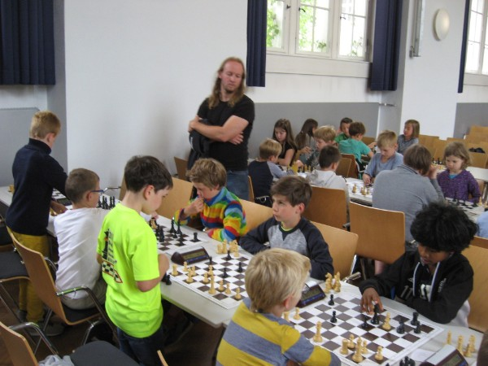
Die Grundschüler (im Hintergrund der Schach-AG-Leiter der Hainbund-GS Till Peter Ischebeck)
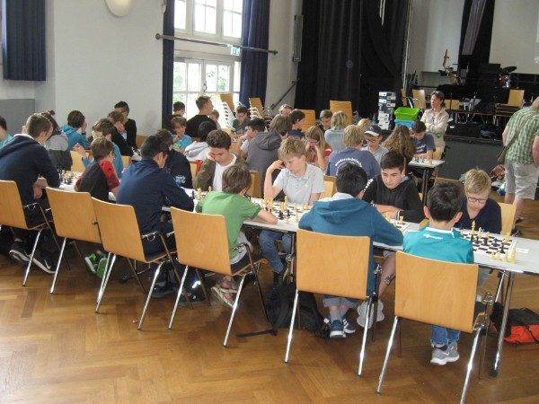
Die Älteren: Die WK I- WK IV
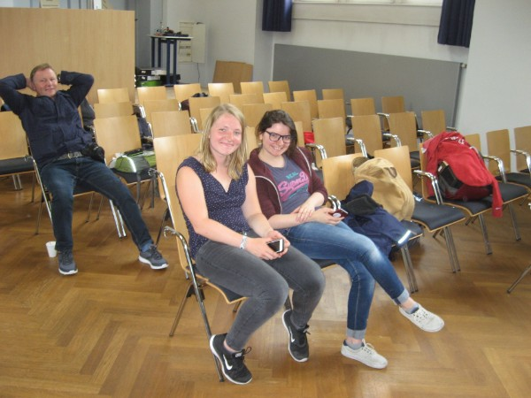
Prominenter Besuch: Stefanie Düssler und Nicole Manusina
Mi. 14.März: Schulschachlandesfinale in Lehrte
Alle Tabellen siehe unter nsj-online.de
Leider konnte weder das HG noch das THG aufgrund von Schulprojekttagen, Erkrankungen und Schülerausstauschprogrammen, mit einem konkurrenzfähigem Team antreten, so dass der sportliche Erfolg sich dieses Jahr in Grenzen hielt. Einzig Marius Liestmann konnte sich mit der Hainbund-GS als 4. für das Bundesfinale im Schulschach qualifizieren.
Schulschachbezirksfinale 2017/18 am 14.Februar in Fallersleben
WK Grundschule
| Mannschafts-Rangliste: Stand nach der 6. Runde | ||||||||||||
| Rang | MNr | Mannschaft | TWZ | At | S | R | V | Man.Pkt. | Brt.Pkt | Buchh | ||
|---|---|---|---|---|---|---|---|---|---|---|---|---|
| 1. | 6. | Hainbundschule | 934 | 5 | 1 | 0 | 11 - 1 | 19.5 | 37.0 | |||
| 2. | 3. | 1 Burgschule Pein | 4 | 2 | 0 | 10 - 2 | 18.5 | 41.0 | ||||
| 3. | 1. | 1 Fallersleben | 3 | 1 | 2 | 7 - 5 | 12.0 | 38.0 | ||||
| 4. | 4. | 2 Burgschule Pein | 3 | 1 | 2 | 7 - 5 | 11.5 | 33.0 | ||||
| 5. | 9. | Rötgesbüttel | 3 | 0 | 3 | 6 - 6 | 14.0 | 42.0 | ||||
| 6. | 5. | Bredelem | 3 | 0 | 3 | 6 - 6 | 13.0 | 33.0 | ||||
| 7. | 8. | Adenbüttel | 2 | 1 | 3 | 5 - 7 | 11.0 | 38.0 | ||||
| 8. | 7. | Cremlingen | 2 | 1 | 3 | 5 - 7 | 11.0 | 33.0 | ||||
| 9. | 2. | 2 Fallersleben | 2 | 1 | 3 | 5 - 7 | 9.5 | 40.0 | ||||
| 10. | 12. | Völkenrode-Watenb | 2 | 1 | 3 | 5 - 7 | 9.0 | 35.0 | ||||
| 11. | 11. | Comeniusstraße | 2 | 0 | 4 | 4 - 8 | 8.5 | 30.0 | ||||
| 12. | 10. | Michael-Ende Gifh | 0 | 1 | 5 | 1 - 11 | 6.5 | 32.0 | ||||
Damit sind die Hainbund-GS Göttingen und die Burgschule Peine für das Landesfinale qualifiziert.
Schulschachbezirksfinale 2017/2018 am 29./30. 01. in Bad Harzburg
| Mannschafts-Rangliste: Stand nach der 5. Runde | ||||||||||||
| Rang | MNr | Mannschaft | TWZ | At | S | R | V | Man.Pkt. | Brt.Pkt | Buchh | ||
|---|---|---|---|---|---|---|---|---|---|---|---|---|
| 1. | 1. | HG Göttingen | 5 | 0 | 0 | 10 - 0 | 19.0 | 23.0 | ||||
| 2. | 5. | TRG Osterode | 4 | 0 | 1 | 8 - 2 | 13.0 | 24.0 | ||||
| 3. | 3. | MPG Göttingen | 795 | 2 | 2 | 1 | 6 - 4 | 12.0 | 24.0 | |||
| 4. | 4. | Humboldt Gifhorn | 2 | 1 | 2 | 5 - 5 | 11.0 | 28.0 | ||||
| 5. | 6. | Waldorfschule Göt | 2 | 0 | 3 | 4 - 6 | 8.5 | 26.0 | ||||
| 6. | 2. | WvS 1 Bad Harzbur | 1122 | 1 | 2 | 2 | 4 - 6 | 8.0 | 27.0 | |||
| 7. | 7. | WvS 2 Bad Harzbur | 1 | 1 | 3 | 3 - 7 | 8.5 | 18.0 | ||||
| 8. | 8. | Ersatzspieler | 0 | 0 | 5 | 0 - 10 | 0.0 | 20.0 | ||||
Das HG Göttingen ist für das Landesfinale qualifiziert.
WK III
| Mannschafts-Rangliste: Stand nach der 5. Runde | ||||||||||||
| Rang | MNr | Mannschaft | TWZ | At | S | R | V | Man.Pkt. | Brt.Pkt | Buchh | ||
|---|---|---|---|---|---|---|---|---|---|---|---|---|
| 1. | 1. | THG Göttingen | 4 | 1 | 0 | 9 - 1 | 17.0 | 31.0 | ||||
| 2. | 2. | WG Braunschweig | 979 | 4 | 1 | 0 | 9 - 1 | 15.0 | 31.0 | |||
| 3. | 12. | IGS Gifhorn | 3 | 1 | 1 | 7 - 3 | 12.5 | 19.0 | ||||
| 4. | 13. | Julianum Helmsted | 3 | 0 | 2 | 6 - 4 | 12.5 | 26.0 | ||||
| 5. | 6. | FKG Göttingen | 3 | 0 | 2 | 6 - 4 | 12.0 | 30.0 | ||||
| 6. | 4. | WvS Bad Harzburg | 750 | 3 | 0 | 2 | 6 - 4 | 10.5 | 26.0 | |||
| 7. | 5. | Eichsfeld Duderst | 2 | 2 | 1 | 6 - 4 | 10.0 | 26.0 | ||||
| 8. | 8. | Hankensbüttel | 2 | 1 | 2 | 5 - 5 | 10.5 | 22.0 | ||||
| 9. | 7. | Gaußschule Brauns | 1 | 3 | 1 | 5 - 5 | 10.5 | 20.0 | ||||
| 10. | 9. | Humboldt Gifhorn | 1 | 2 | 2 | 4 - 6 | 8.5 | 33.0 | ||||
| 11. | 15. | OS 2 Groß-Schneen | 1 | 2 | 2 | 4 - 6 | 8.5 | 20.0 | ||||
| 12. | 14. | OS 1 Groß-Schneen | 1 | 2 | 2 | 4 - 6 | 8.0 | 24.0 | ||||
| 13. | 10. | HvF 1 Braunschwei | 1 | 1 | 3 | 3 - 7 | 9.5 | 24.0 | ||||
| 14. | 3. | OS 3 Groß-Schneen | 779 | 1 | 1 | 3 | 3 - 7 | 8.0 | 18.0 | |||
| 15. | 11. | HvF 2 Braunschwei | 1 | 1 | 3 | 3 - 7 | 7.0 | 22.0 | ||||
Das THG Göttingen ist für das Landesfinale qualifiziert.
WK IV
| Mannschafts-Rangliste: Stand nach der 7. Runde | ||||||||||||
| Rang | MNr | Mannschaft | TWZ | At | S | R | V | Man.Pkt. | Brt.Pkt | Buchh | ||
|---|---|---|---|---|---|---|---|---|---|---|---|---|
| 1. | 3. | HG 1 Göttingen | 1074 | 6 | 1 | 0 | 13 - 1 | 21.5 | 60.0 | |||
| 2. | 2. | THG 1 Göttingen | 1103 | 6 | 0 | 1 | 12 - 2 | 22.5 | 58.0 | |||
| 3. | 10. | Gaußschule 1 Brau | 5 | 0 | 2 | 10 - 4 | 20.0 | 58.0 | ||||
| 4. | 1. | FKG Göttingen | 1195 | 4 | 2 | 1 | 10 - 4 | 19.0 | 50.0 | |||
| 5. | 4. | Silberkamp 1 Pein | 1059 | 4 | 1 | 2 | 9 - 5 | 20.5 | 66.0 | |||
| 6. | 14. | Humboldt Gifhorn | 4 | 1 | 2 | 9 - 5 | 16.5 | 59.0 | ||||
| 6. | 27. | WG 1 Braunschweig | 4 | 1 | 2 | 9 - 5 | 16.5 | 59.0 | ||||
| 8. | 22. | Ricarda-Huch 1 | 4 | 1 | 2 | 9 - 5 | 16.5 | 50.0 | ||||
| 9. | 26. | Waldorfschule Göt | 3 | 2 | 2 | 8 - 6 | 14.5 | 50.0 | ||||
| 10. | 12. | Hankensbüttel | 4 | 0 | 3 | 8 - 6 | 13.5 | 42.0 | ||||
| 11. | 21. | Otto-Hahn Gifhorn | 4 | 0 | 3 | 8 - 6 | 13.0 | 59.0 | ||||
| 12. | 20. | IGS Gifhorn | 3 | 1 | 3 | 7 - 7 | 17.0 | 43.0 | ||||
| 13. | 15. | HvF 1 Braunschwei | 3 | 1 | 3 | 7 - 7 | 16.5 | 57.0 | ||||
| 14. | 5. | MPG Göttingen | 993 | 3 | 1 | 3 | 7 - 7 | 16.5 | 50.0 | |||
| 15. | 18. | IGS 1 Franzsches | 3 | 1 | 3 | 7 - 7 | 13.5 | 42.0 | ||||
| 16. | 13. | HG 2 Göttingen | 3 | 1 | 3 | 7 - 7 | 12.0 | 60.0 | ||||
| 17. | 25. | THG 2 Göttingen | 2 | 2 | 3 | 6 - 8 | 13.0 | 50.0 | ||||
| 18. | 7. | Eichsfeld 1 Duder | 3 | 0 | 4 | 6 - 8 | 13.0 | 48.0 | ||||
| 19. | 23. | Ricarda-Huch 2 | 3 | 0 | 4 | 6 - 8 | 12.0 | 42.0 | ||||
| 20. | 16. | HvF 2 Braunschwei | 2 | 2 | 3 | 6 - 8 | 11.0 | 42.0 | ||||
| 21. | 28. | WG 2 Braunschweig | 2 | 2 | 3 | 6 - 8 | 10.5 | 41.0 | ||||
| 22. | 11. | Gaußschule 2 Brau | 2 | 1 | 4 | 5 - 9 | 10.5 | 38.0 | ||||
| 23. | 6. | Eichendorffschule | 1 | 3 | 3 | 5 - 9 | 10.0 | 56.0 | ||||
| 24. | 24. | Silberkamp 2 Pein | 2 | 1 | 4 | 5 - 9 | 9.5 | 40.0 | ||||
| 25. | 8. | Eichsfeld 2 Duder | 1 | 2 | 4 | 4 - 10 | 11.0 | 40.0 | ||||
| 26. | 17. | HvF 3 Braunschwei | 0 | 3 | 4 | 3 - 11 | 9.0 | 40.0 | ||||
| 27. | 9. | Eichsfeld 3 Duder | 1 | 1 | 5 | 3 - 11 | 7.0 | 38.0 | ||||
| 28. | 19. | IGS 2 Franzsches | 0 | 1 | 6 | 1 - 13 | 6.0 | 34.0 | ||||
Das HG Göttingen und das THG Göttingen sind für das Landesfinale qualifiziert.
1. Hainbung-GS 14:0 MP 27 BP
2. Leineberg-GS I 12:2 21
3. Albani- GS I 10:4 19,5
4. Leineberg-GS II 10:4 17,5
5. Albani-GS III 6:8 10,5
6. Albani-GS II 4:10 8,5
7. Albani-GS IV 1:13 4
8. Albani V 1:13 4
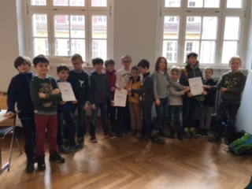
Die siegreichen Teams
16.Juni 2017 Göttinger Schulschacheinzelmeisterschaften
WK GS
Rang Teilnehmer Punkte Buchh.
1. Tulchynsky, David 7.0 29.0
2. Blomer, Moritz 5.0 30.0
3. Liestmann, Marius 5.0 29.0
4. Zimmermann, Simon 5.0 29.0
5. Tulchynsky, Mark 4.0 32.0
6. Lesser, Luan 4.0 28.5
7. Späth, Carlos 4.0 24.5
8. Frerichs, Findus 4.0 21.5
9. Schulze, Hans 4.0 20.0
10. Gajendran, Aran 3.5 23.5
11. Klenke, Jakob 3.0 25.0
12. Bartosch, Karlotta w3.0 24.5
13. Nizamov, Milan 3.0 24.0
14. Fink, Leander 3.0 23.0
15. Elster, Melina w 3.0 21.0
16. Frieber, Till 3.0 18.5
17. Koslowski, Tobias 2.5 23.0
18. Lodhia, Elena w 2.0 20.0
19. Matthießen, Lenny 2.0 18.0
Der Kampf um Bronze und Silber war sehr spannend, denn in der Schlussrunde hatten noch 8 Spieler eine Chance für das Treppchen. Schließlich haben es Marius Liestmann durch einen Sieg im Direktvergleich und das 8 jährige Geburtstagskind Moritz Blomer geschafft. Souverän und hochkonzentriert fuhr David Tulchynsky von der Hainbund-GS den Sieg mit 7 aus 7 nach Hause. Eine Klasseleistung ! Es war auch auffällig, dass die ersten 5 Plätze genau an die Teilnehmer der LJMM u10 gingen. Beste Grundschülerin und damit zweitbestes Mädchen in der Gesamtwertung wurde Karlotta Bartosch von der Albani-GS.
WK II-IV
Rang Teilnehmer Platz-WK P. Buchh
1. Uhlendorff, Luca 1. WK III 6.0 35.0
2. Nizamova, Rita 2. WK III w 6.0 31.5
3. Kanzow, Alexander 1. WK IV 6.0 31.5
4. Mimkes, Pavel 2. WK IV 5.5 31.0
5. Mimkes, Antal 3. WK IV 5.0 29.0
6. Schilling, Rumo WK IV 5.0 27.5
7. Kracke, Lukas WK IV 5.0 25.0
8. Karstens, Fynn 1. WK II 4.5 30.5
9. Kuhlemeyer, Marcel 2. WK II 4.5 30.0
10. Schütz, Philipp 3. WK III 4.5 27.5
11. Gargulla, Matti WK IV 4.5 26.5
12. Schinke,Florian 3. WK II 4.5 25.5
13. Lambert, Gina WK IV w1 4.0 30.5
14. C.dos Santos Schwaab WK IV 4.0 28.0
15. Herzig, Phillip WK III 4.0 27.0
16. Juric, Marian WK IV 4.0 26.5
17. Kanbach, Tim Casimir WK IV 4.0 25.5
18. Tiedtke, Ben WK IV 4.0 24.0
19. Zimmermann, Bennet WK IV 3.5 26.5
20. Kanbach, Moritz WK III 3.5 25.0
21. Hillmann, Lennard WK IV 3.5 22.0
22. Moser, Jonathan WK IV 3.0 26.0
23. Matthießen, Nils WK IV 3.0 25.5
24. Javernik, Johannes WK III 3.0 21.5
25. Hertlein, Evan WK IV 3.0 21.5
26. Fahrendorff, Tristan WK IV 3.0 21.0
27. Dornbusch,Yannik WK IV 3.0 20.5
28. Paufler, Frederik Wk IV 3.0 16.0
29. Schriever, Jan Felix WK IV 3.0 14.5
30. von Hugo, Amelie WK IV w 2.5 25.5
31. Nettelmann, Julian WK IV 2.5 21.0
32. Terpe, Norbert WK II 2.5 20.0
33. Mullaart, Ar.-Julius WK IV 2.0 25.0
34. Plath, Emmanuel WK IV 2.0 23.5
35. Rappe, Michael WK IV 2.0 20.0
36. Kunik, Emily WK IV w 2.0 19.0
37. Magier, Moritz WK IV 2.0 17.0
38. Mut, Max WK IV 1.0 20.5
39. Nettelmann,Katharina WK IV w 1.0 19.5
40. Fischer, Luca WK IV 0.0 18.0
Wenig Überraschendes geschah in der WK IV: Die Favoriten Alexander Kanzow (THG), Pavel Mimkes (THG), und Antal Mimkes (THG) liefen auf den Plätzen 3, 4, und 5 ein. Auch in der WK III enteilten Luca Uhlendorff (HG) als Gesamtsieger, und Rita Nizamova (HG) als Zweite dem Rest des Feldes. Der drittbeste WK III-Spieler wurde Phillipp Schütz (MPG) auf Platz 10. Auch in der WK II dominierten die Vereinsspieler. Bester wurde hier: Fynn Karstens (KGS), Platz 8 vor Marcel Kuhlemeyer (HG) Platz 9, und Florian Schinke auf Platz 13. Eine Sensation gab es aber bei der Mädchenwertung, obwohl sie lange kein Schachturnier mehr bestritten hat, spielte Gina Lambert großartig und wurde als bestes Mädchen 13, wobei die Buchholzwertung zeigte, dass noch mehr drin gewesen wäre. Weitere Spieler, die aus unterschiedlichen Gründen positiv auffielen, waren Lukas Kracke, Rumo Schilling und Carlo dos Santos Schwaab.
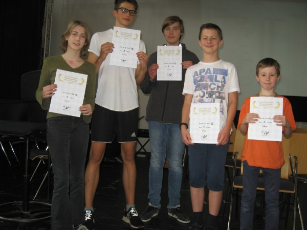
Gold für: Gina Lambert, Luca Uhlendorff, Fynn Karstens, Alexander Kanzow und David Tulchynsky.
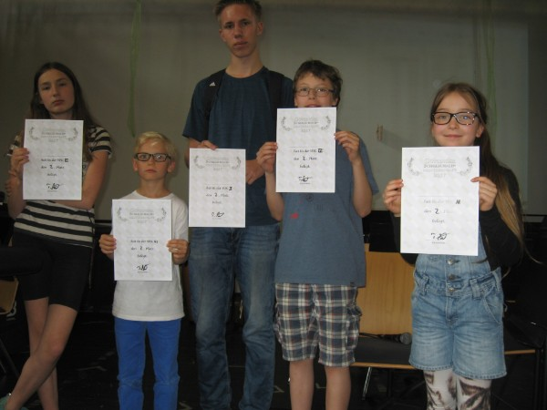
Silber für Rita Nizamova, Moritz Blomer, Marcel Kuhlemeyer, Pavel Mimkes und Karlotta Bartosch.
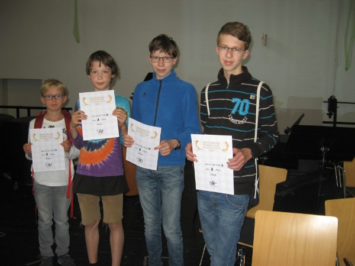
Bronze für: Marius Liestmann, Antal Mimkes, Phillipp Schütz und Florian Schinke.
18.-22.Mai 2017 Bundesschulschachfinale der WK IV in Bad Homburg.
Tabellenstand nach der 9. Runde (Endstand)
DSM WK IV 18.–21.05.2017 in Bad Homburg


Da das THG mit Alexander Kanzow, Pavel Mimkes, Antal Mimkes, Rumo Schilling und Arthur Liebetanz "nur" an Position 18 von 36 Teams gesetzt war, hielten sich auch unsere Erwartungen in Grenzen. Ein wenig Kultur, Schwimmen gehen, Minigolf, Grillen, und auch ein bisschen Schach waren angesagt..
Die ersten drei Runden wurden vormittags gespielt, wobei es zum Auftakt einen 4:0 Pflichtsieg gegen das Gymnasium Johanneum aus Homburg gab, doch bereits in der 2.Runde wartete mit der Oberschule zum Dom aus Lübeck eine Top 10-Mannschaft auf uns. Es sah zunächst auch nicht gut aus, da Antal und Rumo gegen starke Gegner chancenlos blieben, lagen die THGler schnell 0:2 hinten. Doch die Show, die Alex und Pavel nicht nur bei diesem Turnier abzogen, konnte sich wirklich sehen lassen: insgesamt holten beide auf Bezirks-, Landes- und- Bundesebene 20,5 Punkte aus 23 Partien ! Ausgleich also 2:2. In der 3.Runde traf man ausgerechnet auf den niedersächsischen Vizemeister aus Delmenhorst, die wir im Landesfinale noch glatt mit 4:0 besiegen konnten, doch diesmal war die Sache viel enger, es gab einen 2,5:1,5 Sieg. Jetzt konnte endlich zu Mittag gegessen werden, und nun hatte das THG 5:1 Mannschaftspunkte auf dem Konto und Stand auf Position 6....upps.
Nun war der Gang an Tisch 3 und damit gegen einen der großen Favoriten, das Friedrich Schiller-Gymnasium aus Marbach, nicht mehr zu vermeiden. Selbst Alex und Pavel zogen gegen zwei Nationalspieler (DWZ über 2000) den Kürzeren, doch Rumo konnte die THG-Fahne hochhalten und gewann. Alles kam jetzt auf Antal an, der gegen einen DWZ 1700-Spieler in guter Stellung ins Zeitnotgefecht musste, und in einem irren Finish über die Zeit gehebelt wurde. 1:3, aber die Marbacher hatten sich diese Aufgabe wohl leichter vorgestellt. Die völlig unnötige 1:3-Niederlage in der 5.Runde gegen das Robert Mayer-Gymnasium aus Heibronn ließ uns erstmal mit 5:5 Mannschaftspunkten wieder im Mittelfeld verschwinden. Ein wenig Ernüchterung stellte sich ein, aber der 4:0-Sieg gegen die Leibnizschule aus Offenbach in der nächsten Runde ließ die Sonne wieder heller scheinen. Die 7.Runde gegen Schürrle, Götze, und 2x Reus vom Leibnitz-Gymnasium Dortmund war weniger spannend, als es das 2,5:1,5 Ergebnis aussagte. Antals halber Punkt reichte, denn vorne saßen ja Alex und Pavel....In der 8.Runde war dann Tisch 2 angesagt: Die Nr. 1 der Setzliste, der Topfavorit: Das Herder-Gymnasium aus Berlin. An Brett 1 gelang Alex gegen Daniel Sulayev (DWZ 1972) eine Glanzpartie. 1:0 THG. An den anderen Brettern wurde hart gekämpft, denn wir wollten unsere Mini-Chance auf ääh den deutschen Meistertitel schließlich nicht verspielen....schlussendlich konnten sich die Berliner knapp durchsetzen und wurden in der letzten Runde auch verdient deutscher Meister. In der 9. und letzten Runde reichte ein "dreckiger" 2,5:1,5 Arbeitssieg gegen das Georg Cantor-Gymnasium aus Halle zum verdienten 9.Platz in der Abschlusstabelle.
Schulschachlandesfinale in Bemerode am 15.März 2017
WK4-Turnier
Theodor-Heuss-Gymnasium Göttingen 12 – 02 22,0 – 06,0
Gymnasium Willmsstraße Delmenhorst 12 – 02 19,0 – 09,0
Wilhelm-Raabe-Schule Lüneburg 08 – 06 15,5 – 12,5
Gymnasium Adolfinum Bückeburg 07 – 07 15,0 – 13,0
Gymnasium Ursulaschule Osnabrück 06 – 08 16,0 – 12,0
Scharnhorstgymnasium Hildesheim 06 – 08 11,5 – 16,5
Lessing-Gymnasium Uelzen 04 – 10 09,5 – 18,5
Felix-Klein-Gymnasium Göttingen 01 – 13 03,5 – 24,5
WK3-Turnier
Schiller-Gymnasium Hameln 09 – 03 14,0 – 10,0
Gymnasium Ulricianum Aurich 07 – 05 13,0 – 11,0
Herzog-Ernst-Gymnasium Uelzen 05 – 07 11,0 – 13,0
Hainberg-Gymnasium Göttingen 03 – 09 10,0 – 14,0
Bezirksfinale der WK III in Bad Harzburg am 26.Januar 2017
Mannschafts-Rangliste: Stand nach der 5. Runde
| Rang | MNr | Mannschaft | TWZ | At | S | R | V | Man.Pkt. | Brt.Pkt | Buchh | ||
|---|---|---|---|---|---|---|---|---|---|---|---|---|
| 1. | 2. | HG Göttingen | 5 | 0 | 0 | 10 - 0 | 19.0 | 29.0 | ||||
| 2. | 10. | Wilhelm-Gymnasium | 4 | 0 | 1 | 8 - 2 | 14.0 | 28.0 | ||||
| 3. | 5. | IGS Gifhorn | 2 | 2 | 1 | 6 - 4 | 11.5 | 17.0 | ||||
| 4. | 9. | Gaußschule Brauns | 3 | 0 | 2 | 6 - 4 | 9.0 | 31.0 | ||||
| 5. | 7. | HG Gifhorn | 3 | 0 | 2 | 6 - 4 | 8.0 | 32.0 | ||||
| 6. | 1. | Duderstadt | 2 | 1 | 2 | 5 - 5 | 11.5 | 22.0 | ||||
| 7. | 3. | Helmstedt | 2 | 1 | 2 | 5 - 5 | 11.5 | 16.0 | ||||
| 8. | 12. | WvS Bad Harzburg | 2 | 1 | 2 | 5 - 5 | 10.0 | 27.0 | ||||
| 9. | 8. | 1 HvF Braunschwei | 1 | 3 | 1 | 5 - 5 | 10.0 | 26.0 | ||||
| 10. | 11. | Martino Katharine | 1 | 2 | 2 | 4 - 6 | 10.5 | 22.0 | ||||
| 11. | 13. | 2 HvF Braunschwei | 1 | 2 | 2 | 4 - 6 | 10.0 | 24.0 | ||||
| 12. | 6. | MPG Göttingen | 1 | 2 | 2 | 4 - 6 | 9.0 | 24.0 | ||||
| 13. | 4. | Waldorfschule Göt | 1 | 0 | 4 | 2 - 8 | 6.0 | 25.0 | ||||
Bezirksfinale der WK IV in Bad Harzburg am 25.Januar 2017
WK IV
| Mannschafts-Rangliste: Stand nach der 7. Runde | ||||||||||||
| Rang | MNr | Mannschaft | TWZ | At | S | R | V | Man.Pkt. | Brt.Pkt | Buchh | ||
|---|---|---|---|---|---|---|---|---|---|---|---|---|
| 1. | 16. | THG Göttingen | 7 | 0 | 0 | 14 - 0 | 27.5 | 58.0 | ||||
| 2. | 14. | FKG Göttingen | 5 | 1 | 1 | 11 - 3 | 19.0 | 66.0 | ||||
| 3. | 11. | 1 Wilhelmgymnasiu | 5 | 1 | 1 | 11 - 3 | 19.0 | 59.0 | ||||
| 4. | 21. | 1 MPG Göttingen | 4 | 1 | 2 | 9 - 5 | 18.0 | 59.0 | ||||
| 5. | 24. | 1 HvF Braunschwei | 4 | 1 | 2 | 9 - 5 | 18.0 | 49.0 | ||||
| 6. | 17. | 1 HG Göttingen | 4 | 1 | 2 | 9 - 5 | 17.5 | 49.0 | ||||
| 7. | 2. | 1 Duderstadt | 4 | 1 | 2 | 9 - 5 | 17.5 | 48.0 | ||||
| 8. | 1. | HG Gifhorn | 4 | 1 | 2 | 9 - 5 | 14.5 | 65.0 | ||||
| 9. | 10. | Hann. Münden | 4 | 0 | 3 | 8 - 6 | 18.0 | 58.0 | ||||
| 10. | 22. | 2 MPG Göttingen | 3 | 1 | 3 | 7 - 7 | 16.0 | 45.0 | ||||
| 11. | 18. | 2 HG Göttingen | 2 | 3 | 2 | 7 - 7 | 15.0 | 39.0 | ||||
| 12. | 8. | 1 Ricarda Huch | 2 | 3 | 2 | 7 - 7 | 14.5 | 46.0 | ||||
| 13. | 15. | WvS Bad Harzburg | 2 | 3 | 2 | 7 - 7 | 14.0 | 49.0 | ||||
| 14. | 5. | 1 Hankensbüttel | 3 | 1 | 3 | 7 - 7 | 13.5 | 55.0 | ||||
| 15. | 7. | IGS Franzsches Fe | 3 | 1 | 3 | 7 - 7 | 12.5 | 52.0 | ||||
| 16. | 13. | Gaußschule | 3 | 1 | 3 | 7 - 7 | 12.0 | 41.0 | ||||
| 17. | 12. | 2 Wilhelmgymnasiu | 2 | 2 | 3 | 6 - 8 | 12.5 | 58.0 | ||||
| 18. | 23. | 3 MPG Göttingen | 2 | 2 | 3 | 6 - 8 | 11.5 | 45.0 | ||||
| 19. | 19. | 1 Neue IGS | 3 | 0 | 4 | 6 - 8 | 11.0 | 39.0 | ||||
| 20. | 3. | 2 Duderstadt | 2 | 1 | 4 | 5 - 9 | 13.0 | 36.0 | ||||
| 21. | 9. | 2 Ricarda Huch | 2 | 1 | 4 | 5 - 9 | 11.5 | 40.0 | ||||
| 22. | 4. | IGS Gifhorn | 2 | 1 | 4 | 5 - 9 | 10.5 | 41.0 | ||||
| 23. | 6. | 2 Hankensbüttel | 2 | 1 | 4 | 5 - 9 | 9.5 | 48.0 | ||||
| 24. | 25. | 2 HvF Braunschwei | 2 | 0 | 5 | 4 - 10 | 10.5 | 44.0 | ||||
| 25. | 20. | 2 Neue IGS | 1 | 0 | 6 | 2 - 12 | 7.5 | 39.0 | ||||
Kreisfinale der WK GS am 12.Januar in Langelsheim
1. Hainbund-GS (mit Marius Liestmann und David Tulchynsky) 10:0 MP
2. Albani-GS I (mit Tamino Völkel und Maja Antonnina Ueker) 7:3
3. Wilhem-Busch-GS Wolfenbüttel I 7:3
4. Wilhem-Busch-GS Wolfenbüttel I 4:6
5. Albani-GS II 2:8
Die Hainbund-GS aus Weende ist damit für das Bezirksfinale qualifiziert.
Mi. 15.Juni. 2016 VII. Göttinger Schulschacheinzelmeisterschaften im HG
WK GS
Name Schule Punkte
1.Antal Mimkes (Montessori-Schule) 4,5 P. (Sieg nach Stichkampf)
2.Bennet Zimmermann (GS Groß Lengden) 4,5 P.
3.Simon Zimmermann (GS Groß Lengden) 4 P. (Stichkampf 1 P.)
3.David Tulchynsky (Hainbundschule) 4 P. (Stichkampf 1 P.)
3.Benjamin Timpner (Albani-Schule) 4 P. (Stichkampf 1 P.)
6.Artur Liebetanz (Albani-Schule) 3 P.
6.Marius Liestmann (Hainbundschule) 3 P.
6.Tamino Völkel (Albani-Schule) 3 P.
6.Leonard Lüdemann (Albani-Schule) 3 P.
6.Noah Grundmann (Albani-Schule) 3 P.
11.Milan Nizamov (Leineberg-Schule) 2,5 P.
11.Jasper Merlin Kuhlmann (Albani-Schule) 2,5 P.
11.Falk Geurten (Albani-Schule) 2,5 P.
11.Till Frieber (Hainbundschule) 2,5 P.
15.Luan Lesser (Leineberg-Schule) 2 P.
15.Julius von Hannover (Albani-Schule) 2 P.
15.Oskar Piskurek (Albani-Schule) 2 P.
15.Haven Luke (Albani-Schule) 2 P.
19.Tilla Jessing (Albani-Schule) 1,5 P.
19.Ben Gündel (Albani-Schule) 1,5 P.
21.Leopold Tropitsch (Albani-Schule) 1 P.
21.Jared Offenhäußer (Montessori-Schule) 1 P.
21.Finja Henke (Montessori-Schule) 1 P.
Nachdem er im letzten Jahr ganz knapp, nur nach Buchholzfeinwertung am Titel des Göttinger Schulschachmeisters vorbeigeschrammt war, hat es dieses Jahr nun endlich geklappt. Von Anfang an lagen die beiden Favoriten: Antal Mimkes und Bennet Zimmermann gleichauf, so daß ein Stichkampf zwischen diesen beiden um den Titel entscheiden musste. Hier konnte Antal Mimkes sich durchsetzen. Auch um den dritten Platz musste gestochen werden. Da der entscheidene Stichkampf zwischen Simon Zimmermann, David Tulchynsky, und Benjamin Timpner ebenfalls ausgeglichen verlief: Benjamin schlug Simon, David schlug Benjamin und Simon schlug David, entschied man salomonisch allen drei Spielern den 3.Platz zukommen zu lassen.
WK I-IV
Name Schulen WK Punkte
1.Alexander Kanzow THG IV 5 P. Sieger WK IV
2.Philip Herzig HG III 4 P. Sieger WK III
2.Pavel Mimkes THG IV 4 P. 2. Platz WK IV
2.Rita Nizamova HG IVM 4 P. Bestes Mädchen
2.Cord Lampe MPG I 4 P. Sieger WK I
2.Linus Ros THG IV 4 P. 3. Platz WK IV
7.Darja Rizo-Wellmann IGS IVM 3,5 P. 2. Platz Mädchen
7.Mathis Diederichsen MPG III 3,5 P. 2. Platz WK III
9.Gina Lambert HG IVM 3 P. 3. Platz Mädchen
9.Tobias Schuster THG III 3 P. 3. Platz WK III
9.Adrian Friederich MPG I 3 P. 2. Platz WK I
9.Matti Gargulla MPG IV 3 P.
9.Nils Matthießen MPG IV 3 P.
9.Norbert Terpe IGS Bovenden III 3 P.
9.Yannik Ellermann OHG IV 3 P.
9.Johannes Javernik MPG IV 3 P.
9.Philip Schütz MPG III 3 P.
18.Thorben Diederichsen MPG IV 2,5 P.
18.Moritz Kanbach IGS Bovenden IV 2,5 P.
18.Kanghyun Lee THG IV 2,5 P.
18.Maximilian Neumann HG IV 2,5 P.
18.Benedikt Flügel THG IV 2,5 P.
23.Jannik Dornbusch MPG IV 2 P.
23.Florian Schinke Schule Dransfeld III 2 P.
23.Amelie von Hugo MPG IVM 2 P.
23.Mika Barnewold MPG IV 2 P.
23.Jonathan Moser MPG IV 2 P.
23.Alwin Aspelmeier MPG IV 2 P.
29.Elias Prager Bonifatius-Schule IV 1,5 P.
29.Tom Lutze HG IV 1,5 P.
31.Constantin Jäger FKG IV 1 P.
31.Til Taschenberger OHG IV 1 P.
31.Emmanuel Plath MPG IV 1 P.
31.Nando Gad-El Karim MPG IV 1 P.
35.Miguel Schlegel MPG IV 0,5 P.
36.Baran Akgül MPG IV 0 P.
Der Sieg in der WK IV ging an Alexander Kanzow, der souverän das ganze Feld beherrschte. Pavel Mimkes wurde 2., er entschied den Stichkampf gegen Linus Ros und Rita Nizamova, die somit bestes Mädchen wurde, klar für sich. Zweitbestes Mädchen wurde Darja Rizo-Wellmann auf dem geteilten 7.Platz, und drittbestes Mädchen Gina Lambert knapp dahinter auf dem geteilten 9.Platz.
In der WK III gab es allerdings eine faustdicke Überraschung ! Nicht die auf den Plätzen 7 und 9 einlaufenden Mathis Diederichsen, und Tobias Schuster, sondern Phiip Herzig holte sich völlig verdient den Sieg in der WK III.
Da es dieses Jahr keinen Teilnehmer in der WK II gab, wurde dieser Titel nicht ausgespielt. Aber es gab zwei WK I-Spieler vom MPG, die mitgespielt haben. Sieger hier wurde Cord Lampe mit 4 P. und einem geteilten 2.Platz vor Adrian Fiedrich mit 3 P. auf einem geteilten 9.Platz.
Schulschachlandesfinale am 16.März in Bemerode mit Rochadebeteiligung
WK 2
Oberschule Hasbergen 12 – 00 22,0 – 02,0
Gymnasium Lehrte 08 – 04 15,5 – 08,5
Athenaeum Stade 04 – 08 06,0 – 18,0
Hainberg-Gymnasium Göttingen 00 – 12 04,5 – 19,5
Im Bezirksfinale konnte sich das Hainbergteam mit Luca Uhlendorff, Fynn Karstens, Marcel Kuhlemeyer und Phllip Herzig sich ungeschlagen durchsetzen, doch im Landesfinale war man ohne den krankheitsbedingt ausfallenden Luca Uhlendorff chancenlos. Dennoch gelangen einige Achtungserfolge.
WK 3
Gymnasium an der Willmsstraße Delmenhorst 09 – 03 17,5 – 06,5
Athenaeum Stade 09 – 03 14,5 – 09,5
Schiller-Gymnasium Hameln 05 – 07 09,5 – 14,5
Theodor-Heuss-Gymnasium Göttingen 01 – 11 06,5 – 17,5
Auch das THG in der Besetzung: Pavel Mimkes, Alexander Kanzow, Tobias Schuster und Linus Ros, das im Bezirksfinale nur 1,5 Brettpunkte abgegeben hatte, war im Landesfinale chancenlos, aber das Team könnte in gleicher Besetzung nächstes und auch übernächstes Jahr nochmal zusammenspielen und dann sind durchaus höhere Ambitionen drin.
WK 4
Gymnasium Adolfinum Bückeburg 14 – 00 24,0 – 04,0
Gymnasium Ulricianum Aurich 09 – 05 17,5 – 10,5
Gymnasium Oesede 08 – 06 16,5 – 11,5
Athenaeum Stade 08 – 06 15,0 – 13,0
Hainberg-Gymnasium Göttingen 07 – 07 14,0 – 14,0
Elsa-Brandström-Schule Hannover 06 – 08 12,0 – 16,0
Felix-Klein-Gymnasium Göttingen 04 – 10 10,5 – 17,5
Gymnasium Winsen (Luhe) 00 – 14 02,5 – 25,5
Schade, denn das Hainbergteam mit Arved Mindermann, Rita Nizamova, Lukas Kracke und Nick Anosowitsch, das im Bezirksfinale nur einen einzigen Brettpunkt (!) abgegeben hatte, hätte sich durchaus auch für das Landesfinale qualifizieren können, denn der 2.Platz hätte auch gereicht und war in Reichweite. Topscorer in diesem Schulschachjahr war Rita Nizamova, die 13,5 Punkte aus 14 Partien holte.
29.Februar Bezirksfinale WK I Göttingen 2016
THG-MPG = 4:0
Damit ist das THG fürs Landesfinale qualifiziert.
19.Februar Bezirksfinale WK III Göttingen 2016
1. THG Göttingen (Pavel Mimkes, Alexander Kanzow, Tobias Schuster ud Linus Ros) 6:0 MP, 10,5 BP
2. Humboldt-Gymnasium Gifhorn 3:3, 6 BP
3. MPG Göttingen 2:4, 5,5 BP
4. Hoffman v. Fallersleben Gymn. Braunschweig 1:5, 2 BP
Damit ist das THG fürs Landesfinale qualifiziert.
03.Februar Bezirksfinale WK IV Bad Harzburg 2016
| Mannschafts-Rangliste: Stand nach der 7. Runde | ||||||||||||
| Rang | MNr | Mannschaft | TWZ | At | S | R | V | Man.Pkt. | Brt.Pkt | Buchh | ||
|---|---|---|---|---|---|---|---|---|---|---|---|---|
| 1. | 1. | Hainberg 1 | 7 | 0 | 0 | 14 - 0 | 27.0 | 56.0 | ||||
| 2. | 14. | FKG | 6 | 0 | 1 | 12 - 2 | 18.5 | 59.0 | ||||
| 3. | 2. | Wilhelm 1 | 5 | 0 | 2 | 10 - 4 | 21.0 | 54.0 | ||||
| 4. | 10. | Gifhorn | 4 | 0 | 3 | 8 - 6 | 15.5 | 51.0 | ||||
| 5. | 15. | Werner von Siemen | 3 | 2 | 2 | 8 - 6 | 15.0 | 50.0 | ||||
| 6. | 12. | Ricarda Huch | 3 | 2 | 2 | 8 - 6 | 14.5 | 53.0 | ||||
| 7. | 6. | MPG 1 | 3 | 1 | 3 | 7 - 7 | 15.5 | 54.0 | ||||
| 8. | 7. | MPG 2 | 3 | 1 | 3 | 7 - 7 | 12.0 | 45.0 | ||||
| 9. | 4. | International 1 | 2 | 2 | 3 | 6 - 8 | 14.0 | 36.0 | ||||
| 10. | 11. | HvF Braunschweig | 2 | 2 | 3 | 6 - 8 | 12.5 | 38.0 | ||||
| 11. | 8. | Helmstedt | 2 | 2 | 3 | 6 - 8 | 12.0 | 52.0 | ||||
| 12. | 13. | Hankensbüttel | 2 | 2 | 3 | 6 - 8 | 11.5 | 43.0 | ||||
| 13. | 9. | Wolfsburg | 2 | 2 | 3 | 6 - 8 | 11.0 | 54.0 | ||||
| 14. | 5. | International 2 | 2 | 1 | 4 | 5 - 9 | 13.5 | 45.0 | ||||
| 15. | 3. | Wilhelm 2 | 1 | 1 | 5 | 3 - 11 | 10.5 | 40.0 | ||||
Damit sind das HG und das FKG fürs Landesfinale qualifiziert.
02.Februar Bezirksfinale WK II in Bad Harzburg (Werner von Siemens-Gymnasium)
1. Hainbergymnasium Göttingen 12:0, 20 BP
2. Werner von Siemens Gymnasium Bad Harzburg 7:5, 13 BP
3. Hoffmann von Fallersleben-Gymn. Braunschweig 5:7, 8 BP
4. Felix-Klein-Gymnasium Göttingen 0:12, 4 BP
Damit ist das HG fürs Landesfinale qualifiziert.
14.Januar Vorrunde der WK III in Göttingen (THG)
1. THG 8:0 MP 16 BP
2. MPG 6:2 MP, 10 BP
3. HG 4:4 MP, 8 BP
4. Eichsfeld-Gymnasium Duderstadt 2:6 MP, 5 BP
5. Große Schule Wolfenbüttel 0:8 MP, 1 BP
Damit sind das THG und das MPG fürs Bezirksfinale qualifiziert.
13.Januar Vorrunde der Grundschulen in Braunschweig (Klint-GS)
1. Klint I 13:1 MP
2. GS Watenbüttel 11:3
3. Albani-GS II 11:3
4. Albani-GS I 10:4
5. Klint-GS II 5:7
6. Klint-GS III 4:10
7. Klint-GS IV 2:12
8. GS-Comeniusstr. BS 0:14
Damit sind Klint I und GS-Watenbüttel fürs Bezirksfinale qualifiziert.
VI. Göttinger Schulschachmeisterschaften
Tabelle der WK I+II+III
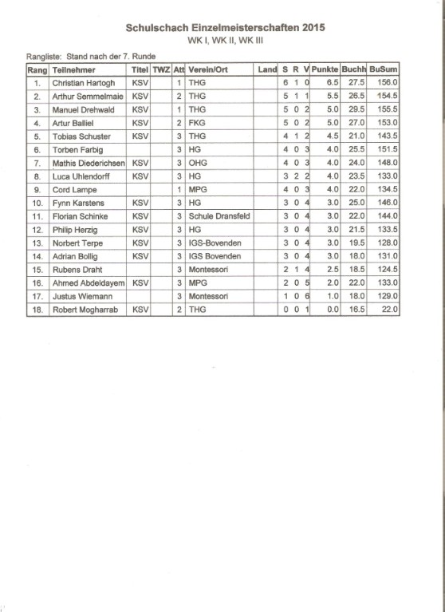
Tabelle der WK IV
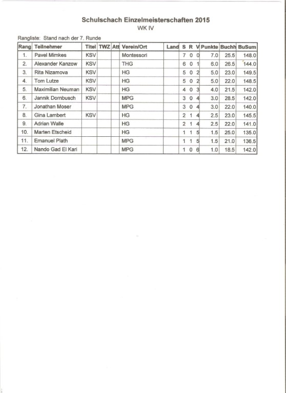
Tabelle der WK GS
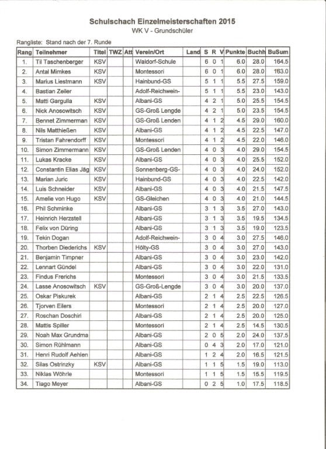
Bericht und Siegerfotos
WK I: Von Anfang an galt in dieser Wettkampfklasse der Oberstufenspieler nur die Frage, ob Christian Hartogh oder Manuel Drehwald den Titel des Göttinger Schulschachmeisters bekommen. In der 4.Runde war es dann auch soweit, als die beiden gegeneinander antreten mussten, und danach fuhr Christian Hartogh das Turnier mit einem Abschlußremis großmeisterlich nach Hause. Aber auch Cord Lampe spielte mit 4 Siegen und Platz 9 im Endklassment ein gutes Turnier.
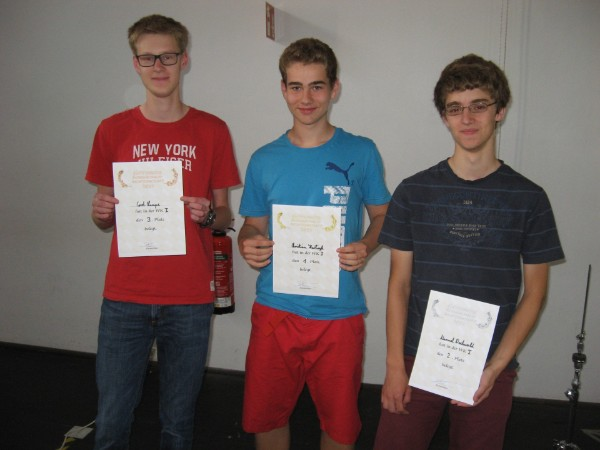
v.l.n.r. Cord Lampe 3. Christian Hartogh 1. Manuel Drehwald 2.
WK II: Da Robert Mogharrab kurz vor Turnierbeginn einfiel, daß er ja doch noch wichtige Termine hatte, spielte diese WK mit nur 2 Leuten. Hier wurde Arthur Semmelmaier mit 5,5 P. souverän 1, aber erneut fiel die enorme Verbesserung von Artur Balliel auf, der ebenfalls ganz vorne mitmischen konnte.
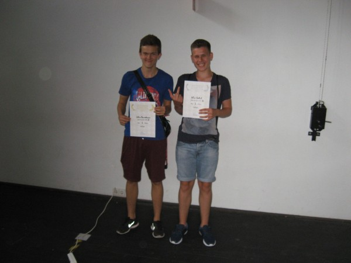
v.l.n.r. Arthur Semmelmaier 1. und Artur Balliel 2.
WK III: Diese Wettkampfklasse war sehr ausgeglichen und deshalb enorm spannend. Vor der letzten Runde hatten noch 4 Spieler die Chance das Turnier zu gewinnen. Schlußendlich, nachdem er schon beim Ropte-Cup das Feld von hinten aufrollen konnte, zog Tobias Schuster wieder an allen vorbei und holte sich auch den Titel des Göttinger Schulschachmeisters, knapp vor Torben Fabig, der in der Vergangenheit auch schon beim Ropte-Cup positiv aufgefallen ist und Mathis Diederichsen.
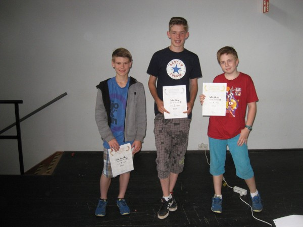
v.l.n.r. Mathis Diederichsen 3., Torben Fabig 2., Tobias Schuster 1.
WK IV: Zu dominierend waren in dieser Wettkampfklasse Pavel Mimkes und Alexander Kanzow. Die Entscheidung fiel in der 4.Runde als Alex ein inkorrektes Läuferopfer brachte, und Pavel das Mehrmaterial nach Hause fahren konnte. 7 aus 7 ein souveräner Durchmarsch. Einzig die amtierende Landesmeisterin Rita Nizamova konnte mit dem Führungsduo mithalten und holte sich verdient die Bronzemedaille. Stark aber auch die Leistungen von Tom Lutze auf Platz 4 und Jannik Dornbusch, der zwar nur 6. wurde, aber die mit Abstand beste Buchholz des Turniers hatte.
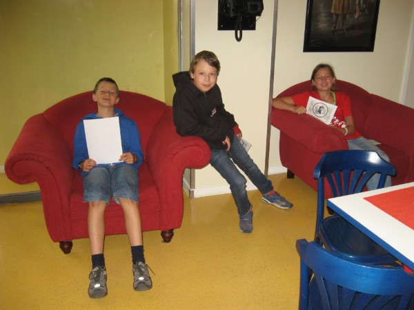
v.l.n.r. Alexander Kanzow 2. Pavel Mimkes 1. Rita Nizamova 3.
WK GS: 33 Grundschüler und eine Grundschülerin Amelie von Hugo, die mit 4 Siegen und Rang 15 den Mädchenpreis gewann, rangen um den Titel des Stadtmeisters, und die Dramatik hätte selbst Alfred Hitchcock nicht besser gestalten können. Der große Favorit des Turniers war Antal Mimkes. Den anderen Spielern wie z.B. Matti Gargulla, Lukas Kracke, Bennet Zimmermann (mit der besten Buchholz !) und Bastian Zeiler wurden nur Außenseiterchancen eingeräumt. Doch völlig überraschend führte bis zur letzten Runde der 7jährige Marius Liestmann ungeschlagen mit 5,5 P. aus 6 Partien das Feld an. In der letzten Runde erwischte es ihn aber gegen Antal dennoch, und er landete auf einem unglaublichen 3.Platz. Nun blieb noch die Frage zu klären: Antal oder äääh Til Taschenberger !!? Nachdem der Computer seinen Job erledigt hatte, stand fest: Beide hatten 6 P. Beide hatten 28 Buchholzpunkte, und so mußte die verfeinerte Buchholzwertung herhalten und die entschied für Til Taschenberger ! Eine faustdicke Sensation, aber dennoch hat Til hervoragendes Schach gespielt und gezeigt, daß er sich erheblich verbessert hat.
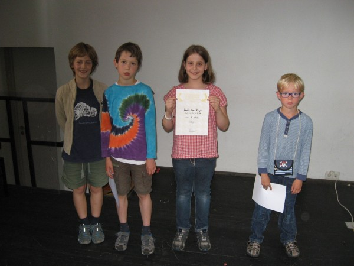
v.l.n.r. Til Taschenberger 1., Antal Mimkes 2., Amelie von Hugo (beste Schülerin), Marius Liestmann 3.
Landesfinale in Hannover-Bemerode am 18.März 2015
Ergebnisse des Schulschach-Landesfinals 2015 (1)
WK 4
Athenaeum Stade 12 – 02 19,0 – 09,0
Herzog-Ernst-Gymnasium Uelzen 12 – 02 18,5 – 09,5
Gymnasium Ulricianum Aurich 09 – 05 16,0 – 12,0
Gymnasium an der Willmsstraße Delmenhorst 08 – 06 15,0 – 13,0
Schillergymnasium Hameln 05 – 09 14,0 – 14,0
Hainberg-Gymnasium Göttingen 05 – 09 11,5 – 16,5
Gymnasium Adolfinum Bückeburg 03 – 11 10,5 – 17,5
Wilhelm-Gymnasium Braunschweig 02 – 12 07,5 – 20,5
„Es war mehr drin“, war der Abschlußkommentar des Hainberger Spitzenbrettes Arved Mindermann, der aber zusammen mit Rita Nizamova, Luca Uhlendorff und Max Neumann in dieser Altersklasse nächstes Jahr fast unverändert nochmals zusammenspielen darf.
WK 1
Hainberg-Gymnasium Göttingen 10 – 02 14,5 – 09,5
Athenaeum Stade 07 – 05 13,0 – 11,0
Ratsgymnasium Osnabrück 04 – 08 10,0 – 14,
Neues Gymnasium Wilhelmshaven 03 – 09 10,5 – 13,5
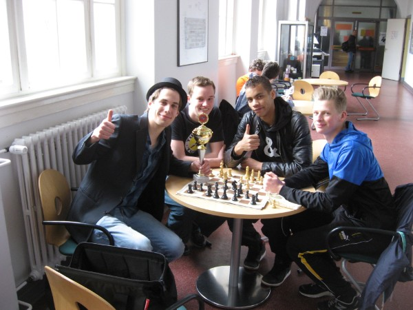
Eine große Generation tritt von der Schulschachbühne ab. Noch einmal zeigten Nelo Oshionwu (3.v.l), Julius Rosin (l.) und Alexander Vinnen (r.), verstärkt mit Arnd Schmid, was in ihnen steckte und holten sich den Landesmeistertitel im Schulschach. Den größten Verdienst hatte, wie schon so oft, Alexander Vinnen mit 5 P. aus 6 Partien, der damit eine unglaubliche Bilanz seit 2008 von 88 Siegen, 6 Remisen und 10 Niederlagen vorzuweisen hat !!
WK GS Bad Harzburg 2015
| Mannschafts-Rangliste: Stand nach der 5. Runde | ||||||||||||
| Rang | MNr | Mannschaft | TWZ | At | S | R | V | Man.Pkt. | Brt.Pkt | Buchh | ||
|---|---|---|---|---|---|---|---|---|---|---|---|---|
| 1. | 1. | Gliesmarode | 1148 | 5 | 0 | 0 | 10 - 0 | 17.0 | 30.0 | |||
| 2. | 3. | Peine | 888 | 4 | 0 | 1 | 8 - 2 | 13.5 | 31.0 | |||
| 3. | 14. | Wesendorf | 3 | 1 | 1 | 7 - 3 | 12.5 | 27.0 | ||||
| 4. | 4. | Albani | 784 | 3 | 0 | 2 | 6 - 4 | 14.0 | 29.0 | |||
| 5. | 5. | Heinrich-Albertz | 775 | 3 | 0 | 2 | 6 - 4 | 12.0 | 21.0 | |||
| 6. | 2. | Klint 1 | 924 | 2 | 1 | 2 | 5 - 5 | 11.5 | 35.0 | |||
| 7. | 10. | Harztorwall Wolfe | 2 | 1 | 2 | 5 - 5 | 10.0 | 27.0 | ||||
| 8. | 6. | Völkenrode-Watenb | 723 | 2 | 1 | 2 | 5 - 5 | 8.0 | 27.0 | |||
| 9. | 13. | Waggum | 2 | 0 | 3 | 4 - 6 | 9.5 | 20.0 | ||||
| 10. | 9. | Bündheim 2 | 2 | 0 | 3 | 4 - 6 | 8.5 | 19.0 | ||||
| 11. | 8. | Bredelem | 2 | 0 | 3 | 4 - 6 | 7.5 | 26.0 | ||||
| 12. | 7. | Bündheim 1 | 715 | 1 | 1 | 3 | 3 - 7 | 8.5 | 21.0 | |||
| 13. | 11. | Klint 4 | 1 | 0 | 4 | 2 - 8 | 3.5 | 18.0 | ||||
| 14. | 12. | Klint 3 | 0 | 1 | 4 | 1 - 9 | 4.0 | 19.0 | ||||
Insgesamt 53 Mannschaften aus den Grundschulen des Bezirkes Braunschweig starteten in diesem Schuljahr, um den Titel des Bezirksmeisters auszuspielen. Die Albani-GS, die in diesem Schuljahr zum ersten Male dabei war und gleich Stadtmeister wurde, gehörte ebenfalls zu den Teilnehmern im Bezirksfinale in Bad Harzburg. Es wurde ein guter Mittelfeldplatz als Zielsetzung ausgelobt, doch die Albani-Schachkinder wollten nicht auf ihren AG-Leiter hören und kämpften bis zur letzten Runde um die Qualli fürs Landesfinale in Hannover mit. Die zweithöchste Brettpunktzahl des Turnieres (Insgesamt holte das Albani-Team 14 Siege und kassierte nur 6 Niederlagen !) läßt erahnen, was mit ein bißchen mehr Spielglück möglich gewesen wäre. Das die Spitzenbretter Matti Gargulla und Lukas Kracke gut abschneiden würden (beide 3 P. aus 5 Partien) konnte man so erwarten, aber vor allem Luis Schneider und Nils Mattheißen entwickelten sich mit 4 P. aus 5 Partien zu absoluten Leistungsträgern.
WK IV
| 1. | 3. | Hainberg 1 | 1021 | 5 | 0 | 0 | 10 - 0 | 18.0 | 22.0 | |||
| 2. | 16. | Wilhelm-G. 1 | 3 | 2 | 0 | 8 - 2 | 14.0 | 25.0 | ||||
| 3. | 2. | Montessori | 1090 | 3 | 1 | 1 | 7 - 3 | 13.0 | 22.0 | |||
| 4. | 1. | MPG 1 | 1125 | 3 | 1 | 1 | 7 - 3 | 11.0 | 32.0 | |||
| 5. | 13. | International Sch | 2 | 2 | 1 | 6 - 4 | 12.5 | 15.0 | ||||
| 6. | 17. | Wilhelm-G. 2 | 2 | 2 | 1 | 6 - 4 | 12.0 | 19.0 | ||||
| 7. | 6. | FKG Göttingen | 3 | 0 | 2 | 6 - 4 | 11.0 | 28.0 | ||||
| 8. | 15. | THG Wolfsburg | 3 | 0 | 2 | 6 - 4 | 10.5 | 28.0 | ||||
| 9. | 5. | WvS Bad Harzburg | 742 | 2 | 1 | 2 | 5 - 5 | 8.0 | 19.0 | |||
| 10. | 10. | Humboldt-G. Gifho | 1 | 2 | 2 | 4 - 6 | 10.0 | 31.0 | ||||
| 11. | 9. | Hainberg 2 | 1 | 2 | 2 | 4 - 6 | 10.0 | 29.0 | ||||
| 12. | 7. | Franzsches Feld 1 | 2 | 0 | 3 | 4 - 6 | 10.0 | 21.0 | ||||
| 13. | 4. | Ricarda Huch Schu | 941 | 2 | 0 | 3 | 4 - 6 | 8.0 | 33.0 | |||
| 14. | 12. | IGS Gifhorn | 2 | 0 | 3 | 4 - 6 | 8.0 | 27.0 | ||||
| 15. | 8. | Franzsches Feld 2 | 0 | 3 | 2 | 3 - 7 | 8.5 | 23.0 | ||||
| 16. | 18. | Wilhelm-G. 3 | 1 | 1 | 3 | 3 - 7 | 8.0 | 29.0 | ||||
| 17. | 14. | MPG 2 | 1 | 1 | 3 | 3 - 7 | 7.5 | 23.0 | ||||
In dieser Wettkampfklasse war das Hainbergymnasium in der Besetzung: Arved Mindermann, Rita Nizamova, Luca Uhlendorff und Tom Lutze von Anfang an der große Favorit und wurde seiner herausragenden Rolle auch gerecht. 18:2 Brettpunkte zeigten die Überlegenheit dieses Teams und auch im Landesfinale wird man bestimmt nicht chancenlos sein. Die Montessori-Schule wurde mit den Mimkes-Brüdern Pavel und Antal etwas überraschend 3. Unglaublich dabei Antal Mimkes an Brett 2: Keiner seiner Kontrahenten schaffte es auch nur 20 Züge durchzuhalten ! Das MPG mit einem starken Mathis Diederichsen am Spitzenbrett wurde 4. Das FKG mit Tim Bräuer 7, und das II. Hainbergteam hielt sich mit Maximilian Neumann an Brett 1 wacker.
WK III
| Mannschafts-Rangliste: Stand nach der 5. Runde | ||||||||||||
| Rang | MNr | Mannschaft | TWZ | At | S | R | V | Man.Pkt. | Brt.Pkt | Buchh | ||
|---|---|---|---|---|---|---|---|---|---|---|---|---|
| 1. | 4. | HvF 1 | 4 | 1 | 0 | 9 - 1 | 17.0 | 22.0 | ||||
| 2. | 1. | Hainberg | 941 | 4 | 0 | 1 | 8 - 2 | 13.5 | 28.0 | |||
| 3. | 6. | Humboldt-G. Gifho | 2 | 2 | 1 | 6 - 4 | 13.0 | 28.0 | ||||
| 4. | 5. | HvF 2 | 3 | 0 | 2 | 6 - 4 | 11.5 | 27.0 | ||||
| 5. | 7. | MPG Göttingen | 3 | 0 | 2 | 6 - 4 | 9.5 | 21.0 | ||||
| 6. | 3. | HNG Wolfsburg | 2 | 1 | 2 | 5 - 5 | 11.0 | 26.0 | ||||
| 7. | 8. | WvS Bad Harzburg | 2 | 0 | 3 | 4 - 6 | 11.0 | 24.0 | ||||
| 8. | 2. | Große Schule Wolf | 2 | 0 | 3 | 4 - 6 | 9.5 | 27.0 | ||||
| 9. | 9. | WK M2 HvF a.k. | 1 | 0 | 4 | 2 - 8 | 4.0 | 26.0 | ||||
| 10. | 10. | WK M2 FKG a.k. | 0 | 0 | 5 | 0 - 10 | 0.0 | 20.0 | ||||
Hier startete das Hainberggymnasium mit Fynn Karstens, Marcel Kuhlemeyer, Kaja Sturmfels und Gina Lambert als krasse Außenseiter, aber mit einer ganz starken Mannschaftsleistung holte man sich sensationell die Vizemeisterschaft, und das könnte doch noch reichen für das Landesfinale in Hannover. Das letzte Wort hat hier aber der Landesschulschachreferent. Jedenfalls holten Fynn und Marcel mit ganz starken Vorstellung 4 P. aus 5 Partien, und auch Gina Lambert, die noch gar nicht in diese Alterskategorie gehört, und Kaja Sturmfels konnten überzeugen.
WK II
| Mannschafts-Rangliste: Stand nach der 5. Runde | ||||||||||||
| Rang | MNr | Mannschaft | TWZ | At | S | R | V | Man.Pkt. | Brt.Pkt | SoBerg | ||
|---|---|---|---|---|---|---|---|---|---|---|---|---|
| 1. | 1. | Große Schule Wolf | 1266 | 3 | 1 | 0 | 7 - 1 | 12.0 | 33.00 | |||
| 2. | 4. | THG Göttingen | 2 | 2 | 0 | 6 - 2 | 11.0 | 30.00 | ||||
| 3. | 2. | FKG Göttingen | 2055 | 2 | 1 | 1 | 5 - 3 | 9.0 | 25.00 | |||
| 4. | 5. | WvS Bad Harzburg | 1 | 0 | 3 | 2 - 6 | 6.0 | 18.00 | ||||
| 5. | 6. | WK IV HvF a.k. | * | 0 | 0 | 0 | 0 - 0 | 0.0 | 0.00 | |||
| 6. | 3. | Humboldt-G. Gifho | 0 | 0 | 4 | 0 - 8 | 2.0 | 7.00 | ||||
Zwei Teams vorne weg, aber das direkte Duell zwischen dem THG mit der Besetzung: Christian Hartogh, Arthur Semmelmaier, Alexander Kanzow, Robert Mogharrab und Tobias Schuster und der Großen Schule Wolfenbüttel konnten die Wolfenbütteler für sich entscheiden, so daß dem THG am Ende nur der undankbare 2.Platz blieb. Das FKG hatte hatte zwar die amtierende deutsche Meisterin Fiona Sieber am 1.Brett, war aber an den hinteren Brettern nicht so stark besetzt, um noch weiter nach vorne kommen zu können.
WK I
| Mannschafts-Rangliste: Stand nach der 5. Runde | ||||||||||||
| Rang | MNr | Mannschaft | TWZ | At | S | R | V | Man.Pkt. | Brt.Pkt | SoBerg | ||
|---|---|---|---|---|---|---|---|---|---|---|---|---|
| 1. | 1. | Hainberg | 1688 | 5 | 0 | 0 | 10 - 0 | 17.5 | 65.50 | |||
| 2. | 3. | Humboldt G. Gifho | 3 | 1 | 1 | 7 - 3 | 12.0 | 37.00 | ||||
| 3. | 5. | Burgberg Bad Harz | 801 | 2 | 2 | 1 | 6 - 4 | 12.5 | 41.00 | |||
| 4. | 6. | OHG Gifhorn | 2 | 1 | 2 | 5 - 5 | 12.0 | 37.00 | ||||
| 5. | 2. | MPG Göttingen | 1 | 0 | 4 | 2 - 8 | 6.0 | 13.50 | ||||
| 6. | 4. | HvF WK IV a.k. | 0 | 0 | 5 | 0 - 10 | 0.0 | 0.00 | ||||
Hier stand eigentlich von Anfang an der Bezirksmeister fest und das Hainbergteam konnte es sich sogar leisten an Brett 4 jemanden aufzubieten, der sein allererstes Schachturnier spielte. Noch einmal wollen die Hainberger, die mit Nelo Oshionwu, Julius Rosin und Alexander Vinnen vor 3 Jahren den deutschen Meistertitel ganz unglücklich verpassten, zum Abschluß ihrer Schulzeit den Landesmeistertitel in der WK I holen.
Göttinger Grundschulmeisterschaften 2014 am 14.Dezember 2014 im Hainberggymnasium:
1. Albani-GS I 10:0 MP 16, 5 BP
2. Adolf-Reichwein-GS 8:2 14,5
3. Lohberg-GS I 6:4 9,5
4. Albani-GS II 3:7 6,5
5. Lohberg-GS III 2:8 6
6. Lohberg-GS II 1:9 7
Sechs Teams kämpften am Montag den 14.Dezember im Hainberggymnasium um den Titel des Göttinger Grundschulmeisters, wobei nur der Sieger das Ticket für das Bezirksfinale in Bad Harzburg lösen konnte. Von Anfang an stellte sich heraus, daß eigentlich nur 2 Teams in der Lage waren den Titel zu holen. Die Albani-Grundschule und die Adolf-Reichwein-GS. Und so fügte es sich, daß ausgerechnet diese beiden Schulen in der letzen Runde punktgleich aufeinandertrafen. Schließlich gewann die Albani-Grundschule nach spannendem Kampf mit 3:1 und fährt nun im Januar nach Bad Harzburg.
Beste Spieler des Turniers waren Matti Gargulla und Lukas Kracke von der Albani-Schule, die sämtliche Partien gewinnen konnten.
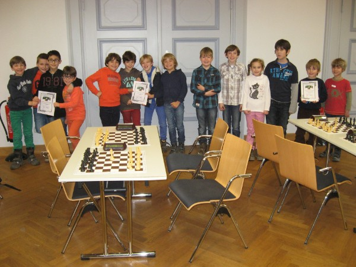
Die Siegerteams von l.n.re. Lohberg-GS, Albani-GS und die Adolf-Reichwein-GS.
Landesschulschachfinale in Hannover 02.April 2014
WK II: (4 Teams)
.
4. THG 1:5 P. 4 BP
Es war irre eng. Das Endergebnis verschweigt ein wenig, wie knapp der Einlauf war. Das Team mit Christian Hartogh, Manuel Drehwald, Jonathan Heutelbeck und Arthur Semmelmaier hat in den entscheidenen Momenten nur ein Quentchen Abgebrühtheit gefehlt.
WK GS (8 Teams)
.
6.GS Herman-Nohl-Göttingen 5:9 P. 12 BP
Unsere Grundschüler (Arved Mindermann, Darja Rizo-Wellmann, Tjade Keydel und Tim Bräuer) haben sich bei ihrer ersten Teilnahme wacker geschlagen.Besonders Arved Mindermann fiel mit einem ausgeglichenen Punktekonto am Spitzenbrett positiv auf.
Schulschachbezirksfinale aller Wettkampfklassen 05. Februar in Bad Harzburg:
WK I (3 Teams)
1. HG 4:0 P. 8 BP
Erwarteter und souveräner Sieg von Nelo Oshionwu, Julius Rosin, Alexander Vinnen und Tim Würzberg. Es gab nix zu meckern, wäre da nicht die liebreizende Rückfahrt gewesen.
WK II (6 Teams)
1. THG 9:1 P. 17 BP.
.
3. MPG 7:3 P. 13 BP.
Das THG-Team mit Manuel Drehwald, Christian Hartogh, Jonathan Heutelbeck, Arthur Semmeleier und Robert Mogharrab wackelte kurz beim 2:2 ausgerechnet gegen das MPG, fiel aber nicht. Christian, Jonathan und Arthur gewannen sämtliche Partien.
WK III (8 Teams)
1. FKG 9:1 P. 15,5 BP
.
6. HG 3:7 P. 7 BP.
Das FKG mit der amtierenden deutschen Meisterin an Brett 1 gewann verdient, beim HG konnten sich Fynn Karstens und Kaja Sturmfels auszeichnen.
WK IV (14 Teams)
3. MPG 8:2, 15,5 BP
.
5. THG I 7:3, 12,5 BP
6. HG I 6:4, 12,5 BP
.
12. HG II 2:8, 5,5 BP
13. THG II 2:8, 4,5 BP
Der DWZ-Favorit: Das THG ist gestrauchelt. Dies lag aber nicht an Alexander Kanzow, der sämtliche Partien gewann, auch Tobias Schuster mit 4,5 P. zeigte eine ansprechende Leistung. Überraschend stark allerdings das MPG mit Mathis Diederichsen am Spitzenbrett, und auch das Hainberggymnasium, das ohne Vereinsspieler antrat. Auffällig war, daß der Turniersieger weder gegen den Zweit- noch gegen den Drittplatzierten gespielt hat.
Schulschachbezirksfinale der Grundschulen 04. Februar in Bad Harzburg:
1. Burgschule Peine I 11:1 P.
2. Hermann-Nohl-GS 11:1 P.
3. Montesorri-Schule 7:5 P.
4. GS Rötgesbüttel 7:5 P.
5. OGS Klint Braunschweig 7:5 P.
.
12. Albani-GS 5:7 P.
15. Adolf-Reichwein-GS 4:8 P. insgesamt 18 Teams
Mit der Burgschule aus Peine und der Hermann-Nohl-GS aus Göttingen haben sich die beiden besten Mannschaften völlig verdient für das Landesfinale qualifiziert. Auch die Albani-GS fiel bei ihrem ersten Turnier positiv auf. Beste Einzelspieler aus Göttingen waren Pavel Mimkes 6 aus 6 am 1.Brett, Darja Rizo-Wellmann 6 aus 6 am 2.Brett und Antal Mimkes 5 aus 6 am 2.Brett. Stark auch Bastian Zeiler 4,5 P. , Arved Mindermann und Matti Gargulla (in seinem ersten Turnier !) mit 4 P. jeweils am 1.Brett und Tim Bräuer mit 4 P. am 4.Brett.
Landesfinale am Dienstag, den 12. März 2013 in Hasbergen
Wettkampfgruppe 2
Gymnasium Athenaeum Stade 4:2 Punkte, 8:4 Brettpunkte
Hainberg-Gymnasium Göttingen 4:2 P., 7,5:4,5 BP.
Rote Schule Hasbergen 4:2 P., 7,5: 4,5 BP.
Wilhelm-Busch-Gymnasium Stadthagen 0:6 P., 1:11 BP.
Wettkampfgruppe 3
Kaiser-Wilhelm-Ratsgymnasium 6:0 Punkte, 9,5:2,5 Brettpunkte
Gymnasium Ursulaschule Osnabrück 4:2 P., 8,5:3,5 BP.
Gymnasium Athenaeum Stade 2:4 P., 4:8 BP.
Theodor-Heuss-Gymnasium Göttingen 0:6 P., 2:10 BP.
Wettkampfgruppe 4
Gymnasium Oesede 12:2 Punkte, 19,5:8,5 Brettpunkte
Gymnasium Athenaeum Stade 10:4 P., 18:10 BP.
Gymnasium Adolfinum Bückeburg 9:5 P., 15:13 BP.
Gymnasium In der Wüste Osnabrück 8:6 P., 17:11 BP.
Gymnasium Lehrte 8:6 P., 15,5:12,5 BP.
Felix-Klein-Gymnasium Göttingen 6:8 P., 9,5:18,5 BP.
Grotefend-Gymnasium Hann.-Münden 3:11 P., 9:19 BP.
Gymnasium Buxtehude 0:14 P., 8,5:19,5 BP.
Bezirksfinale der WK II in Salzgitter-Bad am 25. Februar 2013
1. Hainberggymnasium Göttingen 10:0 Punkte, 19:1 Brettpunkte
2. Werner von Siemens Gymnasium Bad Harzburg 8:2 P., 17 BP.
3. MK Braunschweig 6:4 P., 11 BP.
4. HNG Wolfsburg 4:6 P., 7,5 BP.
5. Gymnasium Salzgitter-Bad 2:8 P, 4,5 BP.
6. Schule im Innerstetal 0:10 P., 1 BP.
Das Hainbergymnasium Göttingen ist damit im Landesfinale.
Bezirksfinale der WK GS in Braunschweig am 18. Februar 2013
1. Burgschule Peine 1 13:1 Punkte, 53 Brettpunkte
2. GS Heinrichstraße 11:3 P., 52 BP.
3. Hölty-GS Göttingen 9:5 P., 58 BP.
4. Montessori-Schule Göttingen 8:6 P., 55 BP.
5. Adolf-Reichwein-GS Göttingen 8:6 P., 51 BP.
vor weiteren sieben Schulen
Die Burgschule Peine 1 und die GS Heinrichstraße sind damit im Landesfinale.
Bezirksfinale der WK III am 22. Januar 2013 in Salzgitter-Bad
1. THG Göttingen
2. Grotefend-Gymnasium Hann.-Münden (disqualifiziert)
3. Gymnasium Martino-Katarineum Braunschweig
4. Gymnasium Salzgitter-Bad I
5. Gymnasium Salzgitter-Bad II
(Das Grotefend-Gymnasium wurde aufgrund eines nicht-spielberechtigten Spielers disqualifiziert.)
Die Bezirksmeister: (von oben rechts nach unten links) Christian Hartogh, Robert Mogharrab, Arthur Semmelmeier und Artur Balliel.
Kreisfinale der WK IV am 16. Januar 2013 in Hann.-Münden
1. Grotefend-Gymnasium Hann.-Münden I
2. Felix-Klein-Gymnasium Göttingen I
3. Grotefend-Gymnasium Hann.-Münden II
4. Hainberg-Gymnasium Göttingen I
5. Hainberg-Gymnasium Göttingen II
Damit sind das Grotefend-Gymnasium und das Felix-Klein-Gymnasium (mit Michael Domke) für das Bezirksfinale qualifiziert. Zwei Spieler aus der ersten Mannschaft des Hainberg-Gymnasium haben leider gefehlt, sodass es zu dessen unbefriedigenden Platzierung kam. Desweiteren hat dessen zweite Mannschaft nur zu dritt spielen können.
Vorgruppenentscheid in der WK GS am 17. Dezember 2012 im Hainberggymnasium
Vorgruppe III:
Hölty I 9:1 Mannschaftspunkte 18 Brettpunkte
Hermann-Nohl I 9:1 MP., 18 BP.
Montessori II 3:7 MP., 7 BP.
Hölty IV 3:7 MP., 6 BP.
Hermann-Nohl III 3:7 MP., 6 BP.
GS Königshof trat nicht an
Hölty I – Hermann-Nohl I = 2:2 Berliner Wertung = 6:4
Hölty IV – Hermann-Nohl III = 2:1 im direkten Vergleich
Vorgruppe IV:
Montessori I 10:0 Mannschaftspunke, 15 Brettpunkte
Hermann-Nohl II 6:4 MP., 10,5 BP.
Hölty II 5:5 MP., 9,5 BP.
GS am Wall 4:6 MP., 10,5 BP.
Godehard-GS 4:6 MP., 7,5 BP.
Hölty III 1:9 MP., 7 BP.
Damit sind Hölty I und Montessori I für das Bezirksfinale qualifiziert.
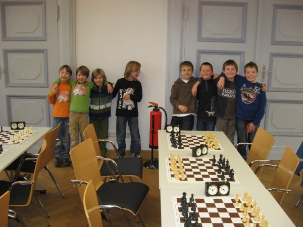
Die Sieger der Vorgruppen: Montessori I (links) und Hölty I (rechts) sind im Bezirksfinale.
V. Göttinger Schulschachmeisterschaften am 18. 07. 2012
Mit 69 Teilnehmern gab es dieses Jahr bei den V. Göttinger Schulschachstadtmeisterschaften einen leichten Rückgang der Teilnehmerzahlen. Dies ist aber wohl hauptsächlich auf die zu knappe Terminierung zurückzuführen.
Am Ende setzten sich aber wieder die Favoriten durch: Die WK I war fest in der Hand des Hainberggymnasiums. Es gewann Nelo Oshionwu, der zum vierten Male hintereinander seinen Titel verteidigen konnte, vor Julius Rosin und Tim Würzberg.
Die WK II war fest in der Hand des THGs. Es gewann Christian Hartogh, der ebenfalls seinen Titel vor Manuel Drehwald und Jonathan Heutelbeck verteidigen konnte.
In der WK III siegte Bezirksvizemeister Kilian Geistlich (OHG) absolut souverän und verwies seinen Dauerrivalen Robert Mogharrab (THG) auf den zweiten Platz. Dritter diesmal Artur Balliel (ebenfalls THG). Die jahrelange hervorragende Schacharbeit in diesem Gymnasium trägt nun langsam Früchte.
In der WK IV dagegen dominierte das MPG: Hier brachte Mathis Diederichsen im großmeisterlichen Stil seinen Stadtmeistertitel nach Hause und gewann vor Nils Siedelnikow (HG), der sein erstes Turnier überhaupt spielte, und Oskar Meier (MPG).
Bei den Grundschülern dominierten die beiden Zweitklässler Pavel Mimkes von der Montessori-Schule, dessen 6-jähriger Bruder Antal auch schon 12. wurde, und Landesmeisterin Darja Rizo-Wellmann von der Herrman-Nohl-GS, die auch bestes Mädchen war, das Turnier. Das Verfolgerfeld wurde angeführt von Luca Uhlendorff (Wilhem-Henneberg-Schule) und dem Hildesheimer U12-Vizemeister Niklas Eichenberg.
Tabellen:
WK GS:
| Platz | Name | Schule | Punkte |
| 1 | Pavel Mimkes | Montessori-Schule | 6,5 P. |
| 2 | Darja-Rizo-Wellmann | Hermann-Nohl-Grundschule | 6 P. |
| 3 | Luca Uhlendorff | Wilhelm-Henneberg-Grundschule | 5,5 P, 32 BP. |
| 4 | Niklas Eichenberg | Bonifatius-Schule Hi. | 5,5 P., 30,5 BP. |
| 5 | Philip Jahn | Wilhelm-Henneberg-Grundschule | 5 P. |
| 5 | Tobias Schuster | Hölty-Grundschule | 5 P. |
| 5 | Erik Schilling | Wilhelm-Henneberg-Grundschule | 5 P. |
| 5 | Noah Stojanovic | Hölty-Grundschule | 5 P. |
| 9 | Arved Mindermann | Hermann-Nohl-Grundschule | 4,5 P. |
| 9 | Alex Henze | Wilhelm-Henneberg-Grundschule | 4,5 P. |
| 9 | Achim Schlather | Wilhelm-Henneberg-Grundschule | 4,5 P. |
| 12 | Antal Mimkes | Montessori-Hort | 4 P. |
| 12 | Nils Sudradjat | Hölty-Grundschule | 4 P. |
| 12 | Fynn Gründel | Hölty-Grundschule | 4 P. |
| 12 | Thorben Fabig | Adolf-Reichwein-Grundschule | 4 P. |
| 12 | Jannik Dornbusch | Grundschule Dramfeld | 4 P. |
| 12 | Frederick Betke | Montessori-Schule | 4 P. |
| 12 | Arne Stopka | Hölty-Grunschule | 4 P. |
| 12 | Benedikt Tolkmitt | Bonifatius-Schule Hi. | 4 P. |
| 12 | Tristan Eichenberg | Bonifatius-Schule Hi. | 4 P. |
| 21 | Bastian Zeiler | Adolf-Reichwein-Grundschule | 3,5 P. |
| 21 | Leon Howind | Adolf-Reichwein-Grundschule | 3,5 P. |
| 23 | Jos Diezmann | Hermann-Nohl-Grundschule | 3 P. |
| 23 | Emil Klerner | Hermann-Nohl-Grundschule | 3 P. |
| 23 | Leon Garamov | Erich-Kästner-Grundschule | 3 P. |
| 23 | Tjade Keydel | Hermann-Nohl-Grundschule | 3 P. |
| 23 | Jonathan Hansen | Hölty-Grundschule | 3 P. |
| 23 | Linus Seebode | Adolf-Reichwein-Grundschule | 3 P. |
| 23 | Maurice Fricke | Hermann-Nohl-Grundschule | 3 P. |
| 30 | Oskar Hesse | Hölty-Grundschule | 2,5 P. |
| 30 | Julian Giro | Hölty-Grundschule | 2,5 P. |
| 30 | Nikita Leonov | Hermann-Nohl-Grundschule | 2,5 P. |
| 30 | Alexej Dieterle | Astrid-Lindgren-Grundschule | 2,5 P. |
| 30 | Cassandra Sieber | Grundschule Reinhausen | 2,5 P. |
| 35 | Valentin Windel | Hölty-Grundschule | 2 P. |
| 35 | Joris Gerlach | Hermann Nohl-Grundschule | 2 P. |
| 35 | Carlo dos Santos | Hermann-Nohl-Grundschule | 2 P. |
| 35 | Justus Wiemann | Montessori-Schule | 2 P. |
| 35 | Jan Pulver-Müller | Bonifatius-Schule Hi. | 2 P. |
| 35 | Moritz Bachner | Adolf-Reichwein-Grundschule | 2 P. |
| 41 | Katharina Borstelmann | Grundschule Bovenden | 1,5 P. |
WK IV (Jg. 2002 und jünger):
| Platz | Name | Schule | Punkte |
| 1 | Mathis Diederichsen | MPG | 4,5 P. |
| 2 | Eleonora Zozulya | FKG | 4 P. |
| 3 | Nils Siegelkow | HG | 3,5 P. |
| 4 | Oskar Meier | MPG | 3 P., 26 BP. |
| 5 | Michael Kahn-Orthan | FKG | 3 P. 25,5 BP. |
| 6 | Kaja Sturmfels | HG | 3 P., 18 BP. |
| 7 | Jonas Fischer | HG | 3 P., 17,5 BP. |
| 8 | Aaron Büchner | HG | 2,5 P. |
| 9 | Alex Assad | HG | 1 P. |
WK III (Jg. 2000/1999):
| Platz | Name | Schule | Punkte |
| 1 | Klilian Geistlich | OHG | 6,5 P. |
| 2 | Robert Mogharrab | THG | 6 P. |
| 3 | Artur Balliel | THG | 5 P. |
| 4 | Nathan Lauer | HG | 4 P. |
| 4 | Artur Semmelmaier | THG | 4 P. |
| 6 | Michael Domke | FKG | 3 P. |
WK II (Jg.1998/'97):
| Platz | Name | Schule | Punkte |
| 1 | Christian Hartogh | THG | 5 P. |
| 2 | Manuel Drehwald | THG | 4,5 P. |
| 3 | Jonathan Heutelbeck | THG | 4 P., 26,5 BP. |
| 4 | Daniel Peschkov | HG | 4 P., 25 BP. |
| 5 | Stephan Rosin | HG | 3,5 P. |
| 6 | Carl Andersohn | HG | 2 P. |
| 7 | Alexander Vinnen | HG | 1 P. |
WK I (Jg. 1996 und älter):
| Platz | Name | Schule | Punkte |
| 1 | Nelo Oshionwu | HG | 6 P. |
| 2 | Julius Rosin | HG | 5,5 P. |
| 3 | Tim Würzberg | HG | 4 P. |
| 4 | Piero Costanzo | HG | 3,5 P. |
| 5 | Thu Ha Nguyen | MPG | 3 P. |
| 5 | Maximilian Langsch | HG | 3 P. |
Schulschach-Landesfinale in Lehrte am Dienstag, den 20. März 2012
Alle Tabellen und Berichte über www.nsj-online.de.
Bezirksfinale der WK IV am Freitag, den 02. März 2012 in Braunschweig:
| 1. Grotefend Gymnasium Hann.-Münden | 5:1 Mannschaftspunkte | 9 Brettpunkte |
| 2. THG Göttingen | 5:1 | 7,5 |
| 3. Gymn. Martino-Katharineum Braunschweig | 1:5 | 4,5 |
| 4. Humboldt-Gymn. Gifhorn | 1:5 | 3 |
Damit sind das Grotefend-Gymnasium aus Hann.-Münden und das THG Göttingen im Landesfinale dabei.
Bezirksfinale der WK GS in Braunschweig am Freitag, den 17. Februar 2012:

Damit sind die Wilhelm-Henneberg-GS und die Burgschule Peine für das Landesfinale qualifiziert.
Bezirksfinale der WK III in Salzgitter Bad am Donnerstag, den 16. Februar 2012:
1. Theodor.Heuss.Gymnasium Göttingen 11:1 , 18 BP
2. Hainberg-Gymnasium Göttingen 10:2, 18,5 BP
3. Heinrich-Nordhoff-Gesamtschule Wolfsburg 8:4, 13 BP
4. Max-Planck-Gymnasium Göttingen 5:7, 10,5 BP
5. Große Schule Wolfenbüttel 4:8, 11 BP
6. Gymnasium Salzgitter-Bad 3:9, 7,5 BP
7. H.v.F. Gymnasium Braunschweig 1:11, 5 BP
Das Theodor-Heuss-Gymnasium und das Hainberg-Gymnasium sind damit im Landesfinale.
Bezirksfinale der WK II am Montag, den 13. Februar 2012 im Theodor-Heuss-Gymnasium Göttingen:
1. Hainberg-Gymnasium Göttingen 8:0 P.
2. Werner-von Siemens-Gymnasium Bad Harzburg 6:2 P.
3. Theodor-Heuss-Gymnasium Göttingen 4:4 P.
4. Gymnasium Martinum-Katherineum-Braunschweig 2:6 P.
5. Max-Plank-Gymnasium Göttingen 0:8 P.
Das Hainberg-Gymnasium ist damit im Landesfinale.
Krefelder Stadtmeisterschaft am 26. Januar 2012:
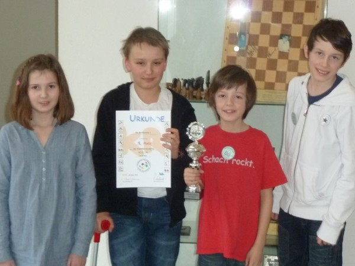
(26.01.2012) Leo 2.v.l. mit seinem Team als Krefelder Stadtmeister in der WK IV. Wir gratulieren.
Göttinger Grundschulmeisterschaften am Mittwoch, den 12. Januar 2012, im Hainberg-Gymnasium Göttingen:
Gruppe A:
1. Herman-Nohl-Grundschule I
2. Adolf-Reichwein-Grundschule I
3. Wilhelm-Henneberg-Grundschule II
4. Grundschule Salzderhelden-Vogelbeck II
Gruppe B:
1. Hölty-Grundschule I
2. Adolf-Reichwein-Grundschule II
3. Wilhelm-Henneberg-Grundschule III
4. Hermann-Nohl -Grundschule II
Gruppe C:
1. Montessori-Schule
2. Hölty-Grundschule II
3. Herman-Nohl-Grundschule
4. Wilhelm-Henneberg-Grundschule IV
Gruppe D:
1. Wilhelm-Henneberg-Grundschule I
2. Grundschule Salzderhelden-Vogelbeck I
3. Hölty-Grundschule III
4. Herman-Nohl-Grundschule IV
Platzierungsrunde um Platz 13: (die Viertplatzierten der Vorgruppen gegeneinander)
13. Wilhelm-Henneberg-Grundschule IV 6:0, 10,5
14. Herman-Nohl-Grundschule II 4:2, 8
15. Herman-Nohl-Grundschule IV 2:4, 3,5
16. Grundschule Salzderhelden-Vogelbeck II 0:6, 2
Platzierungsrunde um Platz 9: (die Drittplatzierten der Vorgruppen gegeneinander)
9. Wilhelm-Henneberg-Grundschule III
10. Hölty-Grundschule III
11. Wilhelm-Henneberg-Grundschule II
12. Hermann-Nohl-Grundschule III
Viertelfinale:
Herman-Nohl-Grundschule I - Adolf Reichwein Grundschule II = 3:1
Hölty-Grundschule I - Adolf-Reichwein I = 4:0
Montessori-Schule - Grundschule Salzderhelden-Vogelbeck I = 3,5:0,5
Wilhelm-Henneberg-Grundschule – Hölty Grundschule II = 2,5:1,5
Platzierungsrunde um Platz 5: (die Verlierer des Viertelfinales)
Adolf-Reichwein-Grundschule II - Adolf-Reichwein-Grundschule I = 1,5:2,5
Grundschule Salzderhelden-Vogelbeck I - Hölty-Grundschule II = 0,5:3,5
Adolf-Reichwein-Grundschule I - Hölty Grundschule II = 2:2 (Berliner Wertung für Adolf-Reichwein-Grundschule)
Adolf-Reichwein-Grundschule II - Grundschule Salzderhelden-Vogelbeck I = 3:1
5. Adolf-Reichwein-Grundschule I
6. Hölty-Grundschule II
7. Adolf-Reichwein-Grundschule II
8. Grundschule Salzderhelden-Vogelbeck II
Halbfinale:
Hermann-Nohl-Grundschule I – Hölty-Grundschule I = 2:2, 0:4 nach Blitzentscheid
Montessori-Schule – Wilhelm-Henneberg-Grundschule I = 1:3
Spiel um Platz 3:
Herman-Nohl-Grundschule I – Montessori-Schule = 1,5:2,5
Finale:
Hölty Grundschule I – Wilhelm-Henneberg-Grundschule I = 4:0
Damit sind Hölty I, Wilhelm-Henneberg I und Montessori für das Bezirksfinale qualifiziert.
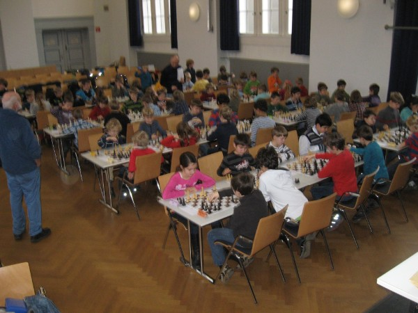
70 schachspielende Kinder bei den Göttinger Grundschulmeisterschaften im Hainberggymnasium.
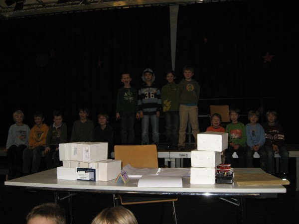
Hölty I ist Stadtmeister: v.l.n.r. Alexander Kanzow, Niels Sudrajat, Noah Stojanovic und Tobias Schuster
Schulschachwettkampf in der WK III am 11. Januar 2012 in der KGS Göttingen:
| Platz | Schule | Mannschaftspunkte | Brettpunkte |
| 1 | THG I | 10:0 MP. | 19 BrP. |
| 2 | KGS I | 6:4 MP. | 10,5 BrP. |
| 3 | MPG | 5:5 MP. | 8,5 BrP. |
| 4 | HG | 5:5 MP. | 7,5 BrP. |
| 5 | THG II | 4:6 MP. | 10 BrP. |
| 6 | KGS II | 0:10 MP. | 4,5 BrP. |
Damit ist THG I für das Bezirksfinale qualifiziert.
IV. Göttinger Schulschacheinzelmeisterschaften 2011
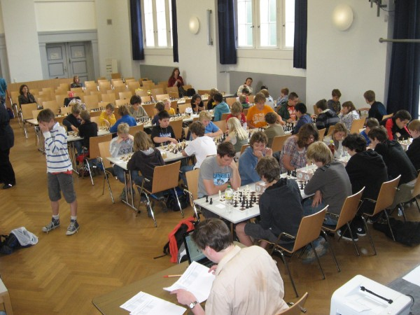
Ob Robert sich vor Grausen abwendet?
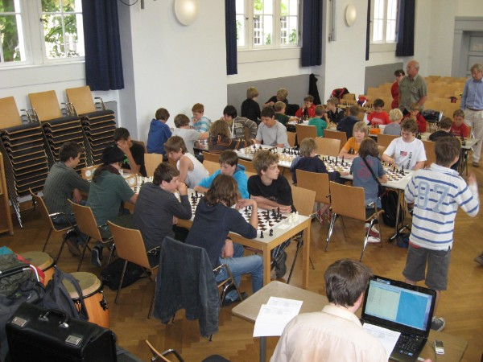
Blick in den Turniersaal
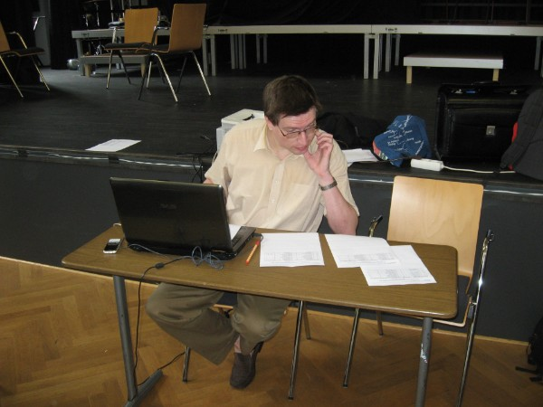
Turnierleiter Holger Buck
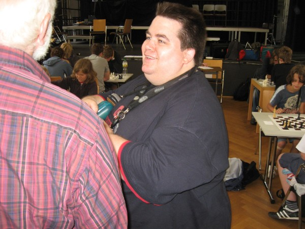
Der Martin (Sokor), unser Schiri
WK GS
| Rang | Teilnehmer | Jahrgang | S | R | V | Punkte | Buchholz | SoBerg. |
| 1 | Domke, Michael | 2000 | 7 | 0 | 0 | 7.0 | 28.5 | 28.50 |
| 2 | Diederichsen, Mathis | 2002 | 6 | 0 | 1 | 6.0 | 27.0 | 22.50 |
| 3 | Jahn, Philip | 2003 | 5 | 0 | 2 | 5.0 | 29.5 | 18.00 |
| 4 | Mimkes, Pavel | 2004 | 5 | 0 | 2 | 5.0 | 27.0 | 16.50 |
| 5 | Uhlendorff, Luca | 2002 | 4 | 1 | 2 | 4.5 | 24.0 | 12.50 |
| 6 | Eickenberg, Niklas | 2000 | 4 | 0 | 3 | 4.0 | 29.5 | 14.50 |
| 7 | Rizo-Wellmann, Darja | 2003 | 4 | 0 | 3 | 4.0 | 27.5 | 13.50 |
| 8 | Schulz, Devon | 2000 | 4 | 0 | 3 | 4.0 | 23.0 | 9.00 |
| 9 | Schütte, Morris | 2003 | 4 | 0 | 3 | 4.0 | 21.5 | 13.50 |
| 10 | Farbig, Torben | 2002 | 4 | 0 | 3 | 4.0 | 21.5 | 12.00 |
| 11 | Stojanovic, Noah Aleksander | 2002 | 4 | 0 | 3 | 4.0 | 20.5 | 10.00 |
| 12 | Ullmann, Jannik | 2002 | 4 | 0 | 3 | 4.0 | 20.0 | 11.0 |
| 13 | Garamov, Leon | 2002 | 3 | 1 | 3 | 3.5 | 17.0 | 7.00 |
| 14 | Meier, Oskar | 2001 | 3 | 0 | 4 | 3.0 | 28.5 | 7.50 |
| 15 | Musakowski, Jakub | 2000 | 3 | 0 | 4 | 3.0 | 22.5 | 9.00 |
| 15 | Seebode, Mathis | 2000 | 3 | 0 | 4 | 3.0 | 22.5 | 9.00 |
| 17 | Exner, Simon | 2002 | 2 | 2 | 3 | 3.0 | 21.5 | 9.75 |
| 18 | Bochler, Moritz | 2003 | 3 | 0 | 4 | 3.0 | 20.0 | 6.00 |
| 19 | Betke, Frederick | 2003 | 3 | 0 | 4 | 3.0 | 18.5 | 8.50 |
| 20 | Schmale, Manuel | 2001 | 2 | 2 | 3 | 3.0 | 17.5 | 5.00 |
| 21 | Reese, Alexander | 2001 | 2 | 1 | 4 | 2.5 | 22.0 | 7.25 |
| 22 | Tolle, Robin | 2002 | 2 | 1 | 4 | 2.5 | 21.0 | 4.75 |
| 23 | Struck, Marvin | 2003 | 1 | 1 | 5 | 1.5 | 18.5 | 1.50 |
| 24 | Unger, Sebastian | 2003 | 1 | 0 | 6 | 1.0 | 20.0 | 3.00 |
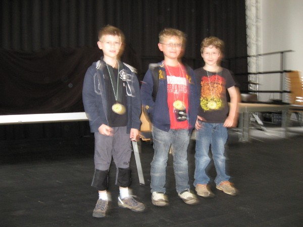
v.l.n.r.: Silber: Mathis Diederichsen, Gold: Michael Domke, Bronze: Philip Jahn
WK IV (Jahrgang 1998/'99/2000)
| Rang | Teilnehmer | Jahrgang | S | R | V | Punkte | Buchholz | SoBerg. |
| 1 | Hartogh, Christian | 1998 | 6 | 1 | 0 | 6.5 | 26.5 | 25.00 |
| 2 | Mogharrab, Robert | 1999 | 5 | 1 | 1 | 5.5 | 27.0 | 19.50 |
| 3 | Geistlich, Kilian | 1999 | 4 | 2 | 1 | 5.0 | 27.5 | 20.25 |
| 4 | Semmelmeier, Arthur | 1999 | 4 | 2 | 1 | 5.0 | 24.0 | 17.25 |
| 5 | Voges,Tim | 1998 | 5 | 0 | 2 | 5.0 | 21.0 | 17.00 |
| 6 | Rosin, Stephan | 1998 | 4 | 1 | 2 | 4.5 | 28.5 | 15.75 |
| 7 | Lauer, Nathan | 1999 | 4 | 0 | 3 | 4.0 | 27.0 | 14.00 |
| 8 | Margraf, David | 2000 | 4 | 0 | 3 | 4.0 | 26.0 | 16.00 |
| 9 | Balliel, Artur | 2000 | 4 | 0 | 3 | 4.0 | 25.5 | 12.00 |
| 10 | Büchner, Aaron | 1999 | 4 | 0 | 3 | 4.0 | 23.5 | 12.00 |
| 11 | Bettels, Jörn | 1998 | 4 | 0 | 3 | 4.0 | 22.5 | 11.50 |
| 12 | Giering, Tim | 1999 | 4 | 0 | 3 | 4.0 | 21.0 | 11.00 |
| 13 | Domeyer, David | 1999 | 3 | 1 | 3 | 3.5 | 29.0 | 14.25 |
| 14 | Schulenberg, Loren | 1998 | 3 | 1 | 3 | 3.5 | 20.5 | 8.25 |
| 15 | Schmidt, Julian | 1999 | 3 | 0 | 4 | 3.0 | 23.0 | 6.00 |
| 16 | Tkach, Sergej | 2000 | 3 | 0 | 4 | 3.0 | 21.5 | 6.00 |
| 17 | Margraf, Simon | 1999 | 3 | 0 | 4 | 3.0 | 21.0 | 6.00 |
| 18 | Schitteck, Tobias | 1999 | 3 | 0 | 4 | 3.0 | 20.5 | 6.50 |
| 19 | Hentschel, Andreas | 1999 | 3 | 0 | 4 | 3.0 | 20.5 | 5.00 |
| 20 | Borchert, Sarah | 2000 | 3 | 0 | 4 | 3.0 | 19.5 | 5.50 |
| 21 | Noack, Adrian | 2000 | 2 | 1 | 4 | 2.5 | 23.5 | 9.75 |
| 22 | Rode, Niklas | 1999 | 2 | 1 | 4 | 2.5 | 18.0 | 3.75 |
| 23 | Misch, Lennard | 1999 | 2 | 0 | 5 | 2.0 | 21.0 | 4.50 |
| 24 | Oks, Ida | 2000 | 1 | 1 | 5 | 1.5 | 18.5 | 2.25 |
| 25 | Mandelkow, Maksim | 1999 | 1 | 0 | 6 | 1.0 | 18.0 | 1.00 |
| 26 | Baris, Abdur Rachm | 1999 | 1 | 0 | 6 | 1.0 | 15.0 | 1.50 |
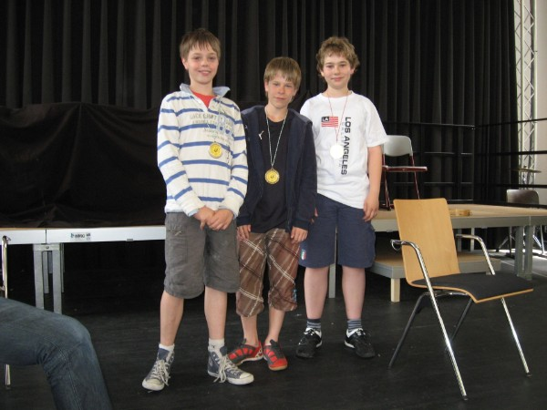
v.l.n.r.: Silber: Robert Mogharrab, Bronze: Kilian Geistlich, Gold: Christian Hartogh
WK III (1996-97)
| Rang | Name | Jahrgang | S | R | V | Punkte | Buchholz | SoBerg. |
| 1 | Oshionwu, Nelo | 1996 | 6 | 0 | 1 | 6.0 | 23.5 | 20.50 |
| 2 | Rosin, Julius | 1996 | 5 | 0 | 2 | 5.0 | 28.0 | 21.50 |
| 3 | Vinnen, Alexander | 1997 | 5 | 0 | 2 | 5.0 | 26.5 | 21.50 |
| 4 | Schimke, Timo | 1994 | 5 | 0 | 2 | 5.0 | 26.0 | 17.00 |
| 5 | Heutelbeck, Jonathan | 1997 | 5 | 0 | 2 | 5.0 | 22.5 | 17.50 |
| 6 | Fischer, Florian | 1996 | 4 | 1 | 2 | 4.5 | 21.5 | 13.00 |
| 7 | Coeurjoly, Tony | 1996 | 3 | 2 | 2 | 4.0 | 27.5 | 16.50 |
| 8 | Costanzo, Piero | 1996 | 4 | 0 | 3 | 4.0 | 26.0 | 13.50 |
| 9 | Drehwald, Manuel | 1997 | 4 | 0 | 3 | 4.0 | 25.0 | 12.50 |
| 10 | Coy, Leon | 1997 | 4 | 0 | 3 | 4.0 | 24.0 | 9.00 |
| 11 | Bezkorovaynyy, Mefodiy | 1992 | 4 | 0 | 3 | 4.0 | 20.5 | 12.50 |
| 12 | Oldenburg, Jakob | 1996 | 3 | 1 | 3 | 3.5 | 18.0 | 5.75 |
| 13 | Huffmann, Leonardo | 1993 | 3 | 0 | 4 | 3.0 | 24.5 | 6.50 |
| 14 | Peschkov, Daniel | 1997 | 3 | 0 | 4 | 3.0 | 22.5 | 7.00 |
| 15 | Langsch, Maximilian | 1996 | 3 | 0 | 4 | 3.0 | 19.0 | 7.00 |
| 16 | Würzberg, Tim | 1996 | 3 | 0 | 4 | 3.0 | 16.0 | 4.00 |
| 17 | Arbeiter, Irene | 1995 | 2 | 1 | 4 | 2.5 | 27.0 | 10.00 |
| 18 | Raffel, Jan | 1996 | 2 | 1 | 4 | 2.5 | 23.0 | 4.75 |
| 19 | Andersohn, Carl | 1997 | 2 | 0 | 5 | 2.0 | 20.5 | 4.00 |
| 20 | Lee, Lewis John | 1997 | 2 | 0 | 5 | 2.0 | 20.0 | 3.00 |
| 21 | Hoffmeister, Kaja | 1997 | 1 | 0 | 6 | 1.0 | 20.0 | 4.00 |
| 22 | Reese, Max | 1997 | 1 | 0 | 6 | 1.0 | 18.5 | 1.00 |
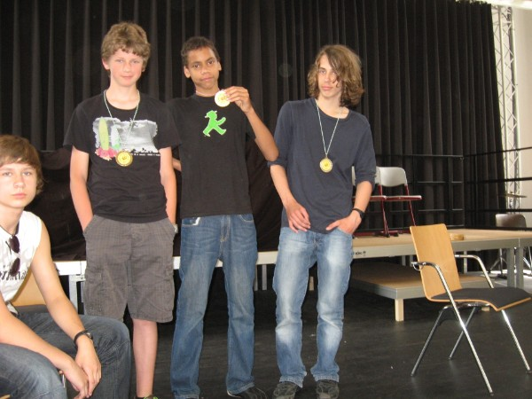
v.l.n.r.: Daniel Peschkov, Bronze: Alex Vinnen, Gold: Nelo Oshionwu, Silber: Julius Rosin
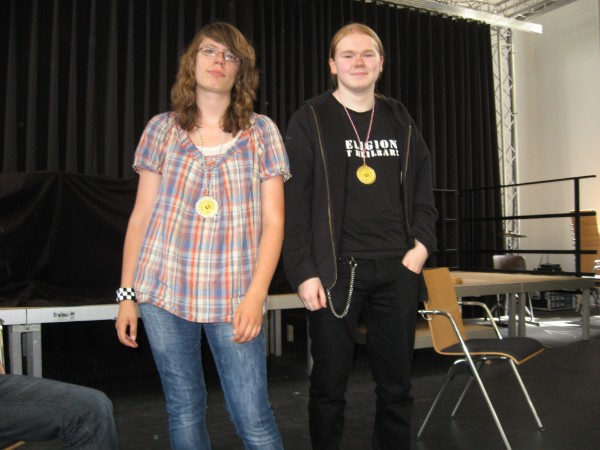
Sieger WK II: Irene Arbeiter und Timo Schimke
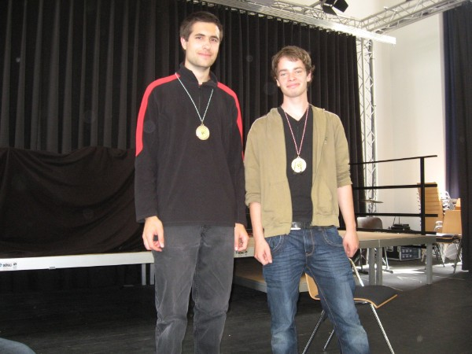
Sieger WK I: Leonardo Huffmann und Mefodiy "Mischa" Bezkorovaynyy
Mit insgesamt 73 teilnehmenden Kindern war in diesem Jahr wieder ein leichter Anstieg der Mitspielerinnen und Mitspieler der Göttinger Schulschacheinzelmeisterschaften zu verzeichnen.
Zusammengefasst kann man sagen, dass es in diesem Jahr im Gegensatz zu den vorherigen Jahren nur wenige Überraschungen gab. Fast überall setzten sich die Favoriten durch: Bei den Grundschülern siegte Michael Domke (Wilhem-Henneberg-Grundschule) erwartungsgemäß und souverän mit 7 Punkten aus 7 Partien, nur Mathis Diederichsen konnte mit 6 Punkten mit ihm Schritt halten. Auch Philip Jahn bewies mit dem 3.Platz, welch hervorragende Schacharbeit seit vielen Jahren schon von Herrn Schmidt in der Wilhelm-Henneberg-Grundschule geleistet wird. Klasse auch der 7.Platz von Darja Rizo-Wellmann, die somit bestes Mädchen des Turnieres wurde.
In der WK IV (Jahrgänge 98 und jünger) setzte sich mit Christian Hartogh vom THG ebenfalls der Favorit durch. Sein wievielter Turniersieg in Serie war das eigentlich ? Auch Robert Mogharrab THG und Kilian Geistlich (Montesorri-Schule) wurden vorne erwartet. Die Vormachtstellung des Theodor-Heuß-Gymnasiums in dieser Atersklasse wird weiterhin durch Arthur Semmelmeier (THG) 4.Platz untermauert.
Spannender ging es in der WK III zu: MIt Nelo Oshionwu, Julius Rosin und Alexander Vinnen setzten sich aber dennoch die Landesmeister vom HG durch und bewiesen, dass das Hainberggymnasium in dieser Altersklasse nicht nur Spitze in Göttingen ist.
In der WK II hatte Timo Schimke (THG) bis zuletzt sogar Chancen das Turnier zu gewinnen, aber durch seine Niederlage in der letzten Runde wurde er noch auf Platz 4 zurückgeworfen.
In der WK I gewann ebenfalls erwartungsgemäß Mischa Bezkorovaynyy, der Schach-AG-Leiter vom THG.
Bundesfinale im Schulschach 2011 in Bad Homburg
Vom 13.-16.Mai fanden in Bad Homburg die deutschen Schulschachmeisterschaften der Wettkampfklassen III (Jahrgänge 96/97) und IV (Jahrgänge 98/99) statt. In der der WK III war das Hainberg-Gymnasium nach dem Landesmeistertitel in Walsrode für Niedersachsen qualifiziert.
Obwohl die Hainberg-Schachkinder im Landesfinale sich schon beängstigend souverän durchsetzen konnten, machte man sich keine allzugroßen Hoffnungen im Bundesfinale erfolgreich zu sein, denn vor allem die Hamburger, sowie auch die Gymnasien aus NRW, Württemberg, Berlin, Hessen und Schleswig-Holstein schienen gespickt mit Nationalspielern und Landesauswahlspielern zu stark zu sein. Zudem boten einige Gymnasien wie. z.B. das Ostwaldgymnasium aus Leipzig und das Käthe Kollwitz Gymnasium aus Berlin sogar Großmeister als Trainer auf. Ein Platz unter den ersten Zehn wurde also schon als zufriedenstellende Platzierung ausgelobt.
In der 1.Runde begannen die Hainberg-Kinder auch entsprechend nervös. Der Ausrichter, das Gymnasium aus dem hessischen Dillenburg wurde zwar mit 3:1 besiegt, aber es ließ sich nicht verschweigen, daß es auch eine Niederlage hätte werden können, denn nachdem Julius Rosin ein schwerer Fehler unterlief, standen auch zwei andere Bretter eigentlich auf Verlust. Glück gehabt und tief durchatmen.
In der 2.Runde traf man auf den badischen Meister, das Gymnasium Ludwig Marum aus Pfinztal. Diesmal waren die Hainberger nicht so nervös und es wurde ein ganz sicherer nie gefährdeter 3:1 Sieg.
In der 3.Runde, die abends gespielt wurde, sollte der erste große Brocken folgen. Mit dem württembergischen Meister das Gymnasium Möckmühl wartete einer der Mitfavoriten. Und es wurde das erwartete Drama: Nelo Oshionwu hatte gegen einen der besten Spieler der deutschen U14 keine Chance und verlor rasch. Auch Alexander Vinnen kam trotz großem Kampfgeistes nicht über ein Remis hinaus, aber Piero Costanzos Eröffnungsplan ging voll auf und er konnte somit zum 1,5:1,5 ausgleichen. Alles kam nun auf Julius Rosin an Brett 2 an. Es sah nicht gut aus, denn er hatte höchstens eine ausgeglichene Endspielstellung auf dem Brett und zudem nur noch 15 Sekunden auf der Uhr. So stellte er seinem Gegner eine letzte Falle und dieser tappte prompt hinein: Ein ganz wichtiger 2,5:1,5 Sieg für die Göttinger Spieler.
Somit hatten vor der 4.Runde nur noch zwei Teams eine reine Weste: Das Hainberggymnasium und der schleswig-holsteinische Meister das Gymnasium Harskheide Norderstedt, die mit einem Sieg über die starken Hamburger und einem 4:0 gegen die Edith Stein Schule aus Darmstadt aufhorchen ließen. Doch die Anstrengungen und Aufregungen vom Vortag konnten die Hainberger nicht so leicht abschütteln, so daß nur der frisch hereingekommene Maximilian Langsch, der von den 3 Partien, die er mitspielte, keine einzige verlor, den Ehrenpunkt für die Göttinger Mannschaft holte. Alle anderen Partien gingen ziemlich schnell den Bach runter, so daß die 1:3 Niederlage verdient war. Dennoch schienen aber auch die Schleswig-Holsteiner ihre Kräfte falsch eingeteilt zu haben, denn nach dieser Runde, gewannen sie keine einzige Begegnung mehr und wurden am Ende nur 7.
In der 5.Runde warteten die starken Bremer vom Gymnasium Horn auf uns, die alle Mitglieder der Schachabteilung von Werder Bremen waren. Auch diese Begegnung ließ an Spannung nichts zu wünschen übrig. Schnell lagen die Hainberger 0:2 zurück, so daß eigentlich schon alles verloren war. Doch Julius Rosin spielte eine hervorragende Positionspartie und der erfolgreichste Spieler der Mannschaft Alexander Vinnen beschwindelte seinen Gegner, so daß es noch zum 2:2 reichte. Damit fiel das Hainberggymnasium in der Zwischenzeit auf Platz 5 zurück, man war aber noch in Schlagdistanz zur Tabellenspitze.
Der nie gefährdete 3:1 Sieg in der 6.Runde gegen das Gymnasium aus dem brandenburgischen Lübbenau brachte die Hainberger wieder vor auf den 2.Platz, wobei sowohl Alexander Vinnen, als auch Maximilian Langsch schöne Angriffspartien gelangen. Julius Rosin hatte das Pech in Gewinnstellung in Zeitnot zu geraten, so daß er seine Zeit überschritt und das angestrebte 4:0 nicht mehr möglich war. Dennoch wussten die Hainberger, am Abend, als anderen Partien beendet waren, ein Sieg in der letzten Runde gegen das Ursula-Gymnasium aus Düsseldorf und man war deutscher Meister !!
Die letzte Runde wurde angepfiffen. Hochkonzentriert trat man den Gang an Tisch eins an. Alle nahmen sich vor, die Partie ihres Lebens zu spielen. Nach einer halben Stunde, hatte sich Julius Rosin, der den Panow-Angriff in der Caro-Kann-Eröffnung perfekt behandelte, sich einen gedeckten Freibauern erkämpft, die Führung schien nur noch eine Frage der Zeit. An allen anderen Brettern konnte man noch keine Prognose wagen. Nach einer Stunde Spielzeit sah Nelo Oshionwus Stellung verdächtig aus. Er ging die Partie mit dem Budapester Gambit scharf an mit der Folge, daß sein Gegner eine Turmbatterie auf der Zentrallinie erhielt und die gegnerische Dame in seine Stellung einbrach, aber warum nur sah Nelo so zufrieden aus ? Julius Rosins Vorteil verdichtete sich immer mehr er musste zwar die Mehrqualle zurückgeben, aber sein gedeckter Freibauer machte sich schon startbereit. Auch Alexander Vinnen hatte am 3.Brett alles unter Kontrolle, die Stellung war absolut ausgeglichen und Piero Costanzo hatte eine ganze Figur mehr und drohte zudem in die gegnerische Königsstellung einzudringen. Die Sensation rückte immer näher...Noch 30 Minuten waren zu spielen: Nelo Oshionwus Gegner gab überraschend auf, Nelo hatte eine fantastische und tiefberechnete Bauernkombination gesehen. Julius Rosin spielte noch, sein Sieg schien nur noch eine Frage der Zeit. Nur Alexander Vinnen hatte einen Bauern eingestellt und danach war das Endpiel nicht mehr zu halten, (1:1) während Piero Costanzo immer noch auf Gewinn stand, aber er hatte nur 3,5 Minuten auf der Uhr. Alles kam nun auf diese Partie an. Noch 5 Spielminuten: Piero Costanzo verlor in hochgradiger Zeitnot seinen Läufer und anschließend seinen Turm, er kämpfte bis zum Schluß und versuchte noch Pattfallen aufzustellen, aber alles nützte nichts mehr. 1:2. Auch Julius Rosins sicherer Sieg brachte auch nicht mehr als das 2:2.
Die Hainberg-Kinder, die schon zum Tanz ansetzen wollten, waren geschockt und untröstlich. Nachdem Berlin und das Hamburger Grootmoor Gymnasium in der Schlussrunde auch noch mit hohen Siegen vorbeizogen, gab es am Ende nur den undankbaren 4. Platz für die Hainberger, die wohl noch ein wenig brauchen werden, bis sie registrieren welch ein unglaubliches Turnier sie in ihrem ersten Bundesfinale gespielt haben und daß sie bewiesen haben, daß sie zur absoluten Spitzenklasse in Deutschland zu zählen sind.
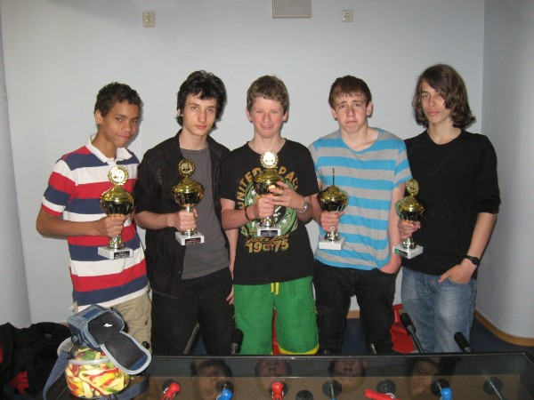
Unsere Fast-Bundesmeister: Nelo, Max, Alex, Piero und Julius vom HG (v.l.n.r.)
DSMW 2011 WK III Tabelle nach der 7. Runde
Montag, den 16. Mai 2011 um 13:21 Uhr
Fortschrittstabelle: Stand nach der 7. Runde (nach Rangliste) | ||||||||||||||||
Rang | MNr | Mannschaft | TWZ | Land | 1 | 2 | 3 | 4 | 5 | 6 | 7 | Man.Pk | Ma | Brt.Pk | Br | Buchh |
|---|---|---|---|---|---|---|---|---|---|---|---|---|---|---|---|---|
1. | 3. | Gymn. St. Ursula Düsseldorf | 1503 | NRW | 10h4 | 7g2½ | 12h2 | 6g2 | 8h4 | 2h2½ | 4g2 | 11 | - | 19.0 | - | 58.0 |
5. | 9. | Reksten,Daniel | 1824 | GER | 48s1 | 33w½ | 14s½ | 5w1 | 23s1 | 1s0 | 28w0 | 4.0 | - | 27.5 | 14.00 | |
8. | 10. | Reksten,Anne | 1483 | 49w1 | 34s½ | 15w1 | 6s0 | 24w1 | 2w½ | 29s0 | 4.0 | - | 27.0 | 14.75 | ||
1. | 11. | Surguchov,Alexander | 1545 | 50s1 | 35w½ | 16s½ | 7w1 | 25s1 | 3s1 | 30w1 | 6.0 | - | 24.0 | 20.50 | ||
2. | 12. | Reksten,Lisa | 1161 | 51w1 | 37s1 | 17w0 | 8s0 | 27w1 | 4w1 | 31s1 | 5.0 | - | 28.0 | 20.00 | ||
2. | 1. | Gymn. Grootmoor Hamburg | 1779 | HH | 5h3 | 8g1½ | 9h3 | 7g3½ | 3h3 | 1g1½ | 6g3½ | 10 | - | 19.0 | - | 60.0 |
1. | 1. | Kramer,Julian | 1946 | GER | 38s0 | 23w½ | 57s1 | 33w1 | 19s1 | 9w1 | 5w1 | 5.5 | - | 28.5 | 20.75 | |
7. | 2. | Hinrichs,Lars | 1894 | GER | 39w1 | 24s0 | 58w½ | 34s½ | 20w1 | 10s½ | 6s½ | 4.0 | - | 30.0 | 17.00 | |
6. | 3. | Gröning,Finn Jonathan | 1757 | GER | 40s1 | 25w0 | 59s½ | 35w1 | 21s0 | 11w0 | 7w1 | 3.5 | - | 30.5 | 12.75 | |
1. | 4. | Elbracht,Michael | 1518 | 41w1 | 26s1 | 60w1 | 37s1 | 22w1 | 12s0 | 8s1 | 6.0 | - | 24.0 | 19.00 | ||
3. | 5. | Kollwitz Gymnasium | 1476 | BER | 9h3½ | 6g1½ | 16h2½ | 17g4 | 2g1 | 12h2½ | 8h3 | 10 | - | 18.0 | - | 45.0 |
10. | 19. | Greßmann,Moritz | 1743 | 57s½ | 5w½ | 71s½ | 75w1 | 1w0 | 14s1 | 23s0 | 3.5 | - | 27.5 | 12.00 | ||
3. | 20. | Alcer,Fabian | 1735 | GER | 58w1 | 6s0 | 72w1 | 76s1 | 2s0 | 15w½ | 24w1 | 4.5 | - | 21.5 | 11.50 | |
2. | 21. | Donath,Johann | 1624 | 59s1 | 7w1 | 73s0 | 77w1 | 3w1 | 16s1 | 25s1 | 6.0 | - | 22.0 | 19.00 | ||
5. | 22. | Feyer,Leon | 800 | 60w1 | 8s0 | 74w1 | 78s1 | 4s0 | 17w0 | 27w1 | 4.0 | - | 22.0 | 8.00 | ||
4. | 7. | Hainberg Gym. Göttingen | 1425 | NDS | 15h3 | 5g3 | 6h2½ | 8g1 | 12h2 | 14g3 | 1h2 | 10 | - | 16.5 | - | 52.0 |
6. | 28. | Oshionwu,Nelo | 1599 | 67s1 | 38w1 | 5s0 | 23w0 | 14s0 | 53w1 | 9s1 | 4.0 | - | 27.5 | 15.00 | ||
10. | 29. | Rosin,Julius | 1702 | GER | 68w0 | 39s½ | 6w1 | 24s0 | 15w1 | 54s0 | 10w1 | 3.5 | - | 27.0 | 13.75 | |
4. | 30. | Vinnen,Alexander | 1266 | 69s1 | 40w1 | 7s½ | 25w0 | 16s1 | 55w1 | 11s0 | 4.5 | - | 22.5 | 11.50 | ||
8. | 31. | Costanzo,Piero | 1132 | 70w1 | 8w1 | 17w0 | 12w0 | 2.0 | - | 28.0 | 6.00 | |||||
3. | 32. | Langsch,Maximilian | 1116 | 42s½ | 26s1 | 56s1 | 2.5 | - | 24.0 | 7.50 | ||||||
5. | 9. | Ludwig Marum Gymn. Pfinztal | 1343 | BAD | 2g1 | 4h1 | 4 | 15g3 | 9h2 | 10g2½ | 14h3½ | 9 | - | 17.0 | - | 47.0 |
2. | 38. | Kast,Joannis | 1745 | GER | 1w1 | 28s0 | 67w1 | 57s1 | 48w1 | 53s1 | 5.0 | - | 23.5 | 15.50 | ||
6. | 39. | Hirschberg,Leander | 1713 | GER | 2s0 | 29w½ | 68s1 | 58w½ | 49s1 | 54w1 | 4.0 | - | 22.5 | 11.75 | ||
13. | 40. | Kast,Larissa | 1138 | 3w0 | 30s0 | 69w0 | 59s½ | 51w½ | 55s1 | 2.0 | - | 26.0 | 6.75 | |||
19. | 41. | Pollandt,Tim | 774 | 4s0 | 61w0 | 52s0 | 0.0 | - | 25.5 | 0.00 | ||||||
4. | 42. | Kremer,Alexander | 32w½ | 70s1 | 56w½ | 2.0 | - | 23.5 | 6.00 | |||||||
6. | 2. | Gymnasium Mockmühl | 1562 | WÜR | 11g3 | 3h2½ | 4g1½ | 1h2 | 7g2½ | 8g3 | 2h½ | 9 | - | 15.0 | - | 62.0 |
4. | 5. | Töws,Manuel | 1938 | GER | 44w1 | 19s½ | 28w1 | 9s0 | 33w½ | 23w1 | 1s0 | 4.0 | - | 30.0 | 16.75 | |
2. | 6. | Bergmann,Valentin | 1520 | 45s1 | 20w1 | 29s0 | 10w1 | 34s1 | 24s0 | 2w½ | 4.5 | - | 29.0 | 18.50 | ||
9. | 7. | Schissler,Cornelius | 1512 | 46w1 | 21s0 | 30w½ | 11s0 | 35w½ | 25w1 | 3s0 | 3.0 | - | 31.5 | 11.25 | ||
6. | 8. | Dirks,Alexander | 1278 | 47s0 | 22w1 | 31s0 | 12w1 | 37s½ | 26s1 | 4w0 | 3.5 | - | 28.5 | 13.75 | ||
7. | 8. | Edith Stein Schule Darmstadt | 1418 | HES | 16g4 | 1h1½ | 14g3½ | 2h½ | 6h1½ | 9g2½ | 12g3½ | 8 | - | 17.0 | - | 51.0 |
7. | 33. | Tibke,Jonas | 1504 | 71w1 | 9s½ | 53w½ | 1s0 | 5s½ | 57w½ | 14w1 | 4.0 | - | 27.5 | 15.00 | ||
5. | 34. | Wiewesiek,Timo | 1645 | GER | 72s1 | 10w½ | 54s1 | 2w½ | 6w0 | 15s1 | 4.0 | - | 26.0 | 13.00 | ||
3. | 35. | Dittmar,Lars | 1421 | 73w1 | 11s½ | 55w1 | 3s0 | 7s½ | 58s1 | 16w1 | 5.0 | - | 22.5 | 14.50 | ||
14. | 36. | Tampe,Alexander | 1101 | 74s1 | 59w0 | 1.0 | - | 23.0 | 1.50 | |||||||
2. | 37. | Ginsburg,Leo | 800 | 12w0 | 56s1 | 4w0 | 8w½ | 60s1 | 17s½ | 3.0 | - | 28.5 | 9.50 | |||
8. | 6. | Gymn. Harksheide Norderstedt | 1446 | SWH | 13g3 | 2h2½ | 17g4 | 4h3 | 1g0 | 6h1 | 3g1 | 8 | - | 14.5 | - | 58.0 |
3. | 23. | Polert,Annika | 1718 | GER | 62w1 | 1s½ | 75w1 | 28s1 | 9w0 | 5s0 | 19w1 | 4.5 | - | 26.0 | 15.25 | |
1. | 24. | Lengler,Tim | 1567 | 63s1 | 2w1 | 76s1 | 29w1 | 10s0 | 6w1 | 20s0 | 5.0 | - | 24.5 | 16.00 | ||
7. | 25. | Zimmermann,Jasmin | 1514 | 3s1 | 77w1 | 30s1 | 11w0 | 7s0 | 21w0 | 3.0 | - | 29.5 | 10.50 | |||
11. | 26. | Bruns,Hendrik | 984 | 64w1 | 4w0 | 78s1 | 32w0 | 8w0 | 2.0 | - | 25.5 | 4.50 | ||||
9. | 27. | Otzen,Robert | 764 | 65s0 | 12s0 | 22s0 | 0.0 | - | 23.0 | 0.00 | ||||||
9. | 13. | Ignaz Kögler Gymn. Landsberg | 1211 | BAY | 3g½ | 11h3 | 2g1 | 13h4 | 5g2 | 7h1½ | 4 | 7 | - | 16.0 | - | 51.0 |
12. | 57. | Böhm,Korbinian | 1365 | 19w½ | 43s½ | 1w0 | 62s1 | 38w0 | 33s½ | 2.5 | - | 26.5 | 7.25 | |||
13. | 58. | Stöhler,Jörn | 1409 | 20s0 | 45w½ | 2s½ | 63w1 | 39s½ | 35w0 | 2.5 | - | 28.5 | 9.50 | |||
5. | 59. | Kaspar,Florian | 1123 | 21w0 | 46s1 | 3w½ | 64s1 | 40w½ | 36s1 | 4.0 | - | 26.5 | 12.50 | |||
10. | 60. | Hohl,Sebastian | 947 | 22s0 | 47w1 | 4s0 | 65w1 | 37w0 | 2.0 | - | 27.5 | 7.00 | ||||
6. | 61. | Hohl,Lukas | 834 | 41s1 | 1.0 | - | 19.5 | 2.00 | ||||||||
10. | 11. | Richard Wossidlo Gymn. Waren | 1239 | MVP | 1g0 | 13h2 | 11g2½ | 12g1½ | 16h2½ | 5h1½ | 17g3½ | 7 | - | 13.5 | - | 41.0 |
16. | 48. | Stork,Leonard-Christopher | 1409 | 9w0 | 62s0 | 43w1 | 14w0 | 71s0 | 38s0 | 75w½ | 1.5 | - | 24.5 | 3.25 | ||
14. | 49. | Kollark,Lukas | 1121 | 10s0 | 63w0 | 44s½ | 15s0 | 72w1 | 39w0 | 76s1 | 2.5 | - | 21.5 | 4.25 | ||
17. | 50. | Burr,Maximilian | 1164 | 11w0 | 45w0 | 73s½ | 0.5 | - | 22.0 | 1.50 | ||||||
3. | 51. | Zwerg,Kevin | 1263 | 12s0 | 65s1 | 47s1 | 16w½ | 74w1 | 40s½ | 77w1 | 5.0 | - | 20.5 | 13.25 | ||
1. | 52. | Burr,Philipp | 1053 | 66w1 | 17s1 | 41w1 | 78s1 | 4.0 | - | 22.0 | 10.00 | |||||
11. | 10. | Marie Curie Gymn. Worbis | 1274 | THU | 6h1 | 9g1 | 10h1½ | 4 | 15g2 | 17h3½ | 13g2 | 6 | - | 15.0 | - | 37.0 |
17. | 43. | Gast,Antonia | 1321 | 57w½ | 48s0 | 67w0 | 75s½ | 62w0 | 1.0 | - | 19.0 | 2.75 | ||||
9. | 44. | Vergin,Marcel | 1356 | 5s0 | 49w½ | 68s1 | 76w1 | 63s1 | 3.5 | - | 18.5 | 6.75 | ||||
10. | 45. | Iseke,Reinhard | 1259 | 6w0 | 58s½ | 50s1 | 77s1 | 64w0 | 2.5 | - | 23.0 | 6.50 | ||||
12. | 46. | Danneleit,Tobias | 1159 | 7s0 | 59w0 | 69w0 | 78w1 | 66s1 | 2.0 | - | 20.0 | 3.50 | ||||
5. | 47. | Edelmann,Jonas | 1208 | 8w1 | 60s0 | 51w0 | 70s1 | 2.0 | - | 24.0 | 6.00 | |||||
12. | 4. | Gymniasum Horn | 1501 | HB | 14g3½ | 17h1½ | 1g2 | 10h2½ | 4g2 | 3g1½ | 7h½ | 6 | - | 13.5 | - | 55.0 |
8. | 14. | Kardoeus,David | 1730 | GER | 53w1 | 75s½ | 9w½ | 48s1 | 28w1 | 19w0 | 33s0 | 4.0 | - | 22.5 | 11.75 | |
12. | 15. | Ismail,Nabil | 1598 | 54s½ | 76w1 | 10s0 | 49w1 | 29s0 | 20s½ | 34w0 | 3.0 | - | 24.0 | 7.50 | ||
15. | 16. | Boberg,Tobias Marcel | 1442 | 55w1 | 77s0 | 11w½ | 51s½ | 30w0 | 21w0 | 35s0 | 2.0 | - | 31.0 | 7.50 | ||
4. | 17. | Müller,Sven Niklas | 1233 | 56s1 | 78w0 | 12s1 | 52w0 | 31s1 | 22s1 | 37w½ | 4.5 | - | 25.5 | 16.75 | ||
13. | 14. | Ostwaldgymn. Leipzig | 1189 | SAC | 8h1 | 10g2 | 15h1 | 9g0 | 4 | 16h3 | 11h2 | 6 | - | 13.0 | - | 36.0 |
15. | 62. | Kapinos,Lennart | 1437 | 23s0 | 48w1 | 67s0 | 57w0 | 71s0 | 43s1 | 2.0 | - | 20.5 | 3.50 | |||
11. | 63. | Waschischeck,Tom | 1454 | 24w0 | 49s1 | 68w1 | 58s0 | 72w1 | 44w0 | 3.0 | - | 22.0 | 5.50 | |||
12. | 64. | Moerke,Konstantin | 1065 | 26s0 | 69s0 | 59w0 | 73s1 | 45s1 | 2.0 | - | 23.0 | 6.50 | ||||
9. | 65. | Groß,Karl | 800 | 27w1 | 51w0 | 60s0 | 74w1 | 2.0 | - | 21.5 | 3.50 | |||||
10. | 66. | Reschke,Tilmann | 800 | 52s0 | 70w0 | 46w0 | 0.0 | - | 21.0 | 0.00 | ||||||
14. | 12. | Paul Fahlisch Gymn. Lübbenau | 1222 | BRA | 12h½ | 15g3 | 7h½ | 16g4 | 17h2½ | 4h1 | 5g½ | 6 | - | 12.0 | - | 42.0 |
11. | 53. | Domschke,Timo | 1467 | 14s0 | 67w1 | 33s½ | 71w1 | 75s½ | 28s0 | 38w0 | 3.0 | - | 26.5 | 9.75 | ||
4. | 54. | Frick,Alexander | 1214 | 15w½ | 68s1 | 34w0 | 72s1 | 76w1 | 29w1 | 39s0 | 4.5 | - | 19.0 | 8.50 | ||
16. | 55. | Herrmann,Heribert | 1274 | 16s0 | 69w1 | 35s0 | 73w1 | 77s0 | 30s0 | 40w0 | 2.0 | - | 23.0 | 6.50 | ||
7. | 56. | Zakirov,Nikita | 934 | 17w0 | 70s0 | 37w0 | 74s1 | 78w1 | 32w0 | 42s½ | 2.5 | - | 22.0 | 5.00 | ||
15. | 15. | Wilhelm von Oranien Dillenburg | 1110 | HES | 4g1 | 14h1 | 13g3 | 5h1 | 11h2 | 4 | 16g0 | 5 | - | 12.0 | - | 41.0 |
13. | 67. | Juschin,Christian | 1249 | 28w0 | 53s0 | 62w1 | 38s0 | 43s1 | 71w0 | 2.0 | - | 24.5 | 4.50 | |||
15. | 68. | Götzler,Max | 1136 | 29s1 | 54w0 | 63s0 | 39w0 | 44w0 | 72s0 | 1.0 | - | 24.5 | 3.50 | |||
8. | 69. | Kempfer,Justus | 1156 | 30w0 | 55s0 | 64w1 | 40s1 | 46s1 | 73w0 | 3.0 | - | 22.5 | 8.50 | |||
13. | 70. | Gail,Lukas | 900 | 31s0 | 56w1 | 66s1 | 42w0 | 47w0 | 74s0 | 2.0 | - | 20.5 | 4.50 | |||
16. | 16. | Hochwaldgymn. Wadern | 994 | SAR | 7h0 | 4 | 3g1½ | 14h0 | 10g1½ | 13g1 | 15h4 | 4 | - | 12.0 | - | 45.0 |
9. | 71. | Wagner,Jonas | 1219 | 33s0 | 19w½ | 53s0 | 48w1 | 62w1 | 67s1 | 3.5 | - | 20.5 | 8.25 | |||
16. | 72. | Hohneck,Johannes | 991 | 34w0 | 20s0 | 54w0 | 49s0 | 63s0 | 68w1 | 1.0 | - | 24.5 | 1.50 | |||
11. | 73. | Klauck,Jeremias | 964 | 35s0 | 21w1 | 55s0 | 50w½ | 64w0 | 69s1 | 2.5 | - | 25.5 | 10.75 | |||
16. | 74. | Dickmann,Jan | 800 | 36w0 | 22s0 | 56w0 | 51s0 | 65s0 | 70w1 | 1.0 | - | 24.5 | 2.50 | |||
17. | 17. | Gymnasium Neuenbürg | 873 | BAD | 4 | 12g2½ | 8h0 | 3h0 | 14g1½ | 11g½ | 10h½ | 4 | - | 9.0 | - | 48.0 |
14. | 75. | Kolbe,David | 1013 | 14w½ | 23s0 | 19s0 | 53w½ | 43w½ | 48s½ | 2.0 | - | 22.5 | 5.25 | |||
19. | 76. | Klaiber,Patrick | 849 | 15s0 | 24w0 | 20w0 | 54s0 | 44s0 | 49w0 | 0.0 | - | 28.0 | 0.00 | |||
14. | 77. | Härter,Silas | 831 | 16w1 | 25s0 | 21s0 | 55w1 | 45w0 | 51s0 | 2.0 | - | 26.0 | 4.00 | |||
15. | 78. | Leinert,Robin | 800 | 17s1 | 26w0 | 22w0 | 56s0 | 46s0 | 52w0 | 1.0 | - | 26.5 | 4.50 | |||

Landesfinale im Schulschach am 22.März in Walrode:
Hainbergymnasium Landesmeister im Schulschach
Endtabelle des Landesfinales vom 22.März 2011 in Walsrode.
Hainberggymnasium Göttingen 13:1 Mannschaftspunkte, 23,5 Brettpunkte
Athenaeum Stade 11:3 19,5
Johaneeum Lüneburg 9:5 17,5
Adolfinum Bückeburg 8:5 15
Gymn.Oesede-Georgsmarienhütte 6:8 10,5
Gymnasium Bad Bentheim 4:10 13
Gymnasium Syke 4:10 10
Katherineum-Martineum Braunschweig 1:13 5
1.Niedersächsische Leinebergland-Schulschacheinzelmeisterschaften:
10.Januar 2011:
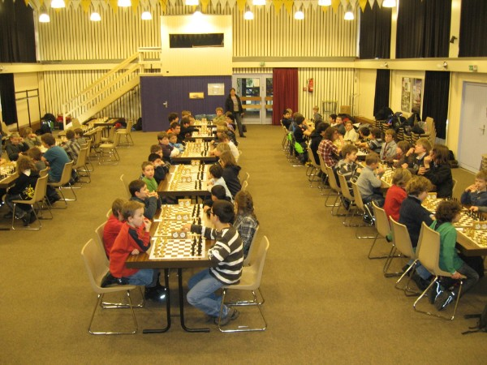
Ein Blick in den Turniersaal der sehr schönen Schule in Hildesheim
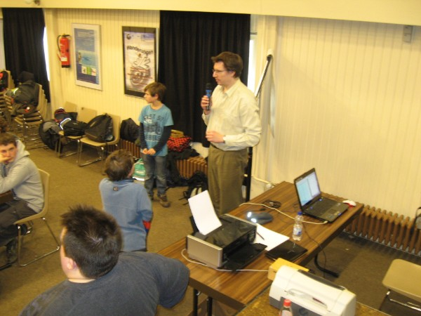
Am Mikrofon: Turnierleiter Holger Buck
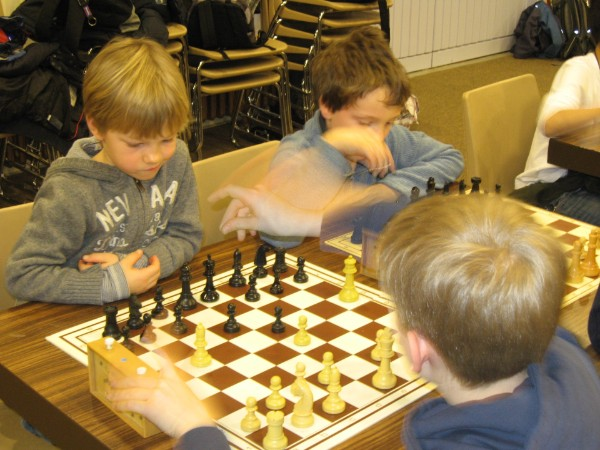
"Freddy" und Carlo landeten bei ihrem ersten Turnier auf den Plätzen 33 und 34 im Mittelfeld der Tabelle!
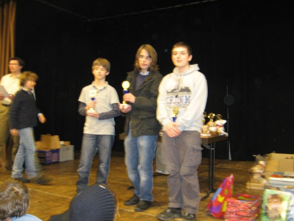
Die Sieger der Altersklasse '97 und älter: v.l.n.r.2. Manuel Drehwald (THG),1. Julius Rosin (HG) und 3. Florian Fischer (KGS)
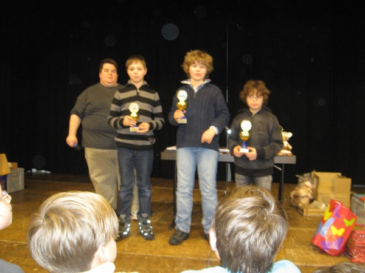
In der Altersklasse '98/'99 blieben die THGler unter sich: v.l.n.r.: 3. Robert Mogharrab, 1. Christian Hartogh, und 2. Jonas Nizar Dihazi. (im Hintergrund: Turnieroganisator Martin Sokor)
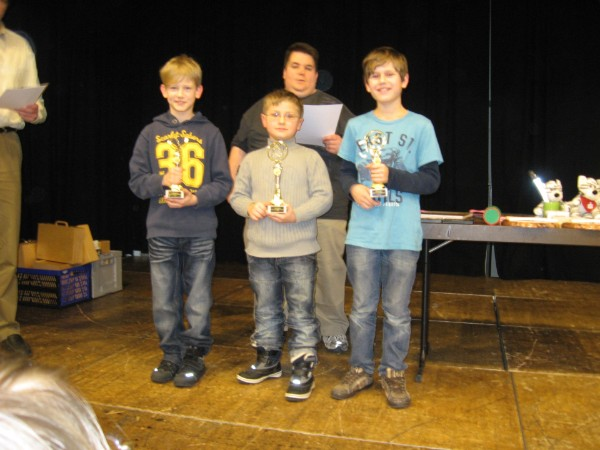
Die Sieger in der Altersklasse 2000 und jünger: v.l.n.r. 2.Platz Kevin Brag (RBG-Hildesheim), 1. Michael Domke (Wilhelm-Henneberg-Grundschule), 3. Artur Balliel (THG)
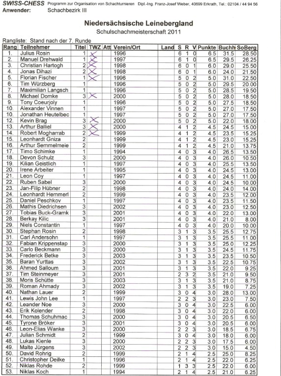
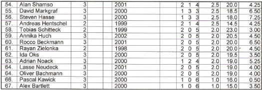
X= Die ersten Drei in ihrer Altersklasse.
Turnierverlauf: Julius Rosin wurde seiner Favoritenrolle gerecht, aber er hatte auch ein wenig Glück, daß Manuel Drehwald, die beiden trafen bereits in der 2.Runde aufeinander, am Ende die schlechtere Buchholz besaß. Sensationell allerdings der 3.Platz von Artur Balliel in seiner Altersklasse, der erst seit einem halben Jahr in der Schach-AG spielt. Insgesamt verlief das Turnier nach anfänglichen technischen Schwierigkeiten dann doch reibungslos und es gab eine Menge Preise für alle, so dass die Kinder im nächsten Jahr ganz bestimmt wiederkommen.
Die Ergebnisse der Göttinger Schulschacheinzelmeisterschaften 2010:
WK GS (Jahrgang 1999 und jünger):
| Platz | Name | Punkte | Buchholzpunkte |
| 1 | Fiona Sieber | 7 P. | |
| 2 | Eric Fajeta | 4,5 P. | 28,5 BP. (direkter Vergleich gegen Kilian gewonnen) |
| 3 | Kilian Geistlich | 4,5 P. | 28,5 BP. |
| 4 | Arthur Semmelmeier | 4,5 P. | 28 BP. |
| 5 | Phillip Jahn | 4 P. | |
| 5 | Robert Mogharrab | 4 P. | |
| 7 | Leonhard Hemmerlein | 3,5 P. | |
| 7 | Nathan Lauer | 3,5 P. | |
| 7 | Tobias Buck-Gramkov | 3,5 P. | |
| 7 | Luca Uhlendorff | 3,5 P. | |
| 7 | Mathis Diederichsen | 3,5 P. | |
| 12 | Sergej Tkach | 3 P. | |
| 12 | Malte Nette | 3 P. | |
| 14 | Bjarne Feldhus | 2 P. | |
| 14 | Niklas Grimme | 2 P. |
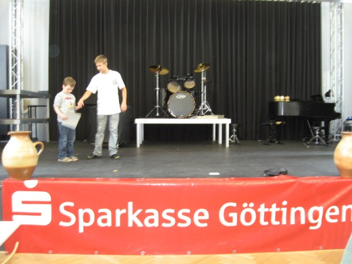
Der jüngste Teilnehmer Phillip Jahn erhält vom Jugendbeiratsvorsitzenden Daniel Peschkov die Urkunde für die schönste Partie des Turniers.
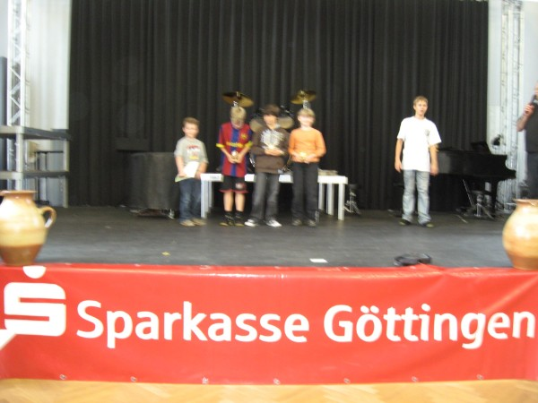
Die Sieger der WK GS v.l.n.r.: Phillip Jahn (schönste Partie) 3. Kilian Geistlich, 2. Eric Fajeta und Siegerin und amtierende deutsche Vizemeisterin Fiona Sieber
WK IV (Jahrgänge 1997/1998):
| Platz | Name | Punkte | Buchholzpunkte |
| 1 | Alexander Vinnen | 6 P. | 29,5 BP. |
| 2 | Christian Hartogh | 6 P. | 29 BP. |
| 3 | Fabian Rosenstock | 5 P. | |
| 4 | Daniel Peschkov | 4,5 P. | |
| 5 | Leon Coy | 4 P. | |
| 5 | Jonas Nizar Dihazi | 4 P. | |
| 7 | Manuel Drehwald | 3,5 P. | |
| 7 | Jonathan Heutelbeck | 3,5 P. | |
| 7 | Stephan Rosin | 3,5 P. | |
| 7 | Lewis Lee | 3,5 P. | |
| 7 | Niels Constantin | 3,5 P. | |
| 12 | Carl Andersohn | 3 P. | |
| 13 | Kaja Hoffmeister | 2,5 P. | |
| 13 | Andreas Mygind | 2,5 P. | |
| 15 | Maximilian Reese | 1 P. |
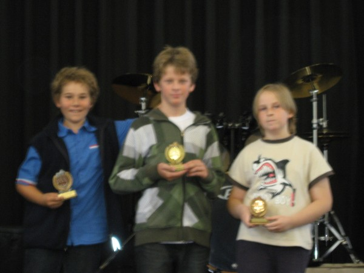
Die Sieger der WK IV: 2. Christian Hartogh, 1. Alexander Vinnen, 3. Fabian Rosenstock
WK III (Jahrgänge 1996/95)
1. Nelo Oshionwu 6,5 P.
2. Mark Gorbach 5 P. 31,5 BP
3. Julius Rosin 5 P. 28,5 BP
4. Maximilian Langsch 4,5 P.
5.-8. Piero Costanzo, Florian Fischer, Tony Coeurjoly, Irene Arbeiter 4 P.
9. Jan Raffel 3,5 P.
10.-12. Gideon Sebastian Geier, Christopher Deilke, Jakob Oldenburg 3 P.
13.-14. Tim Giemsa, Niklas Koch 2 P.
15. Marc Schachtebeck 1 P.
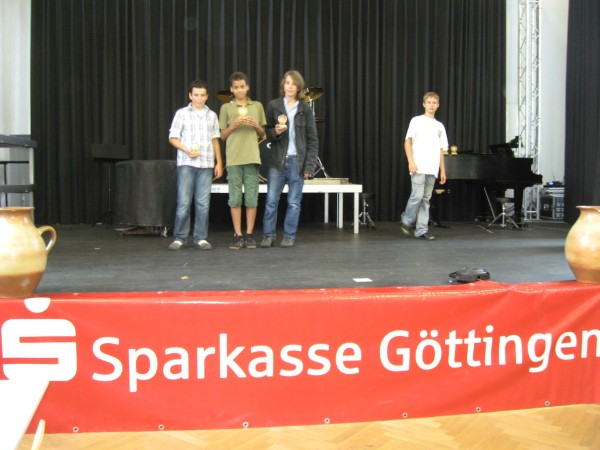
Die Sieger der WK III: 2.Platz: Mark Gorbach, Sieger Nelo Oshionwu, 3. Julius Rosin.
WK II (Jahrgänge 94/93)
1. Phillip Rosenstock 6 P.
2. Leonardo Huffmann 3,5 P.
3. Jakob Haas 3 P.
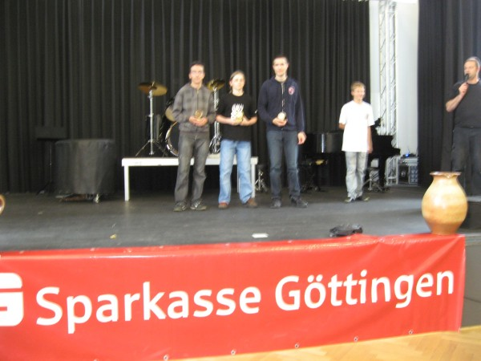
Die Sieger der WK II: 3. Jakob Haas, 1. Phillip Rosenstock, 2. Leonardo Huffmann
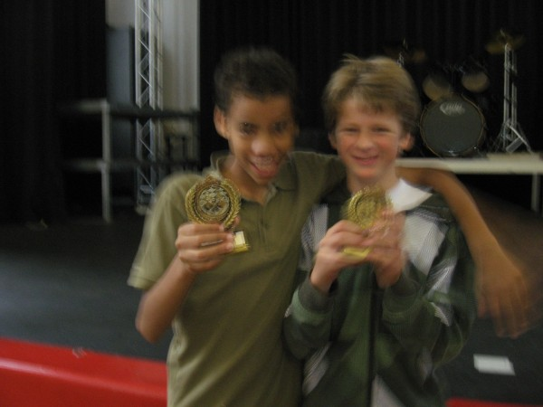
Nelo und Alex beide zum zweiten Male Stadtmeister.
14. März: Landesschulschachfinale in Walsrode:
Das Hainberggymnasium wird Landesvizemeister der WK III:
Tabelle:
| 1 | Gymn.Oesede-Georgsmh. | 6:0 | |
| 2 | Hainberggymnasium Göttingen | 3:3 | |
| 3 | Atheaneum Stade | 2:4 | |
| 4 | (TV)Adolfinum Bückeburg | 1:5 |
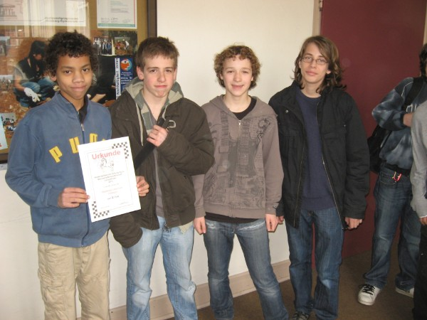
Landesvizemeister der WK III (v.l.n.r.): Nelo Oshionwu, Piero Costanzo, Tim Würzberg und Julius Rosin
22.Februar in Braunschweig Bezirksfinale der WK II:
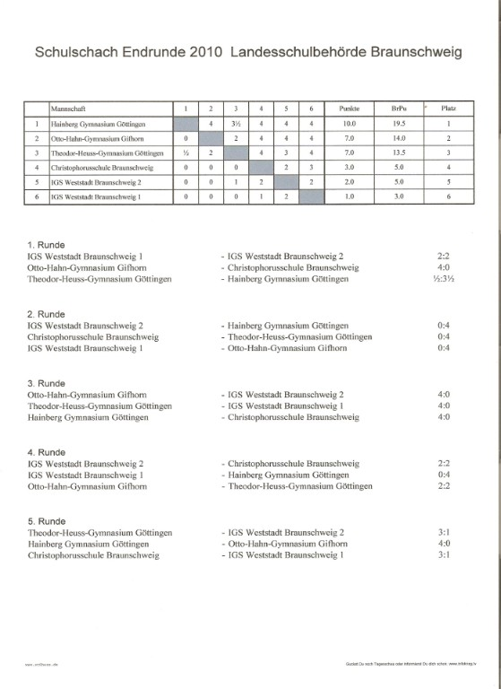
17.Januar: Bezirksfinale der WK IV in Hann.-Münden: Vor der letzten Runde reisten die beiden Göttinger Teams wieder zurück. Grund war die Nullung eines HG-Spielers in einem entscheidenem Match.
Wettkampfklasse Mädchen (Mi.20.Januar 2010 um 11.00 Uhr in Gifhorn)
1.Humboldt-Gymnasium Gifhorn I 4:0 P. 7BP
2.Humboldt-Gymnasium Gifhorn II 1:3 P. 3BP
3.Hainberg Gymnasium Göttingen 1:3 P. 2BP
Kreisfinale der WK IV und der WK III am 15.Dezember 2009 in Hannoversch-Münden
Endstand der WK III :
15.12.2009 WK III | RANGLISTE |
15.12.2009 , 12:31 UHR |
RG | NR | MANNSCHAFTSNAME | RUNDEN | MPUNKTE | BRETTPUNKTE |
1. | 5 | HG * | 7 | 14 : 0 | 26.5 : 1.5 | |
2. | 1 | THG 1 * | 7 | 11 : 3 | 22.0 : 6.0 | |
3. | 4 | KGS | 7 | 11 : 3 | 20.0 : 8.0 | |
4. | 2 | GGM 1 | 7 | 7 : 7 | 13.5 : 14.5 | |
5. | 8 | THG 2 | 7 | 6 : 8 | 10.5 : 17.5 | |
6. | 3 | THG 3 | 7 | 3 : 11 | 10.0 : 18.0 | |
7. | 6 | Montessori | 7 | 3 : 11 | 6.5 : 21.5 | |
8. | 7 | GGM 2 | 7 | 1 : 13 | 3.0 : 25.0 |
Endstand der WK IV:
15.12.2009 WK IV | RANGLISTE |
15.12.2009 , 14:16 UHR |
RG | NR | MANNSCHAFTSNAME | RUNDEN | MPUNKTE | BRETTPUNKTE |
1. | 3 | GGM 1* | 7 | 12 : 2 | 22.5 : 5.5 | |
2. | 2 | HG 1* | 7 | 11 : 3 | 20.0 : 8.0 | |
2. | 1 | THG 1* | 7 | 11 : 3 | 20.0 : 8.0 | |
4. | 8 | THG 2 | 7 | 10 : 4 | 17.0 : 11.0 | |
5. | 6 | GGM 2 | 7 | 6 : 8 | 13.5 : 14.5 | |
6. | 5 | GGM 3 | 7 | 3 : 11 | 6.5 : 21.5 | |
7. | 7 | HG 2 | 7 | 2 : 12 | 5.5 : 22.5 | |
8. | 4 | THG 3 | 7 | 1 : 13 | 7.0 : 21.0 |
* = qualifiziert fürs Bezirksfinale.
Wettkampfklasse Grundschulen 2009/2010
Die Göttinger Vorgruppe am Mi. den 25.November um 9.00 Uhr in der Wilhelm-Henneberg-GS.
| 1.Wilhelm-Henneberg-GS * | 11:1 MP | 18 BP |
| 2.Hölty-GS I | 11:1 MP | 17,5 BP |
| 3.Hölty-GS III | 5:5 MP | 8 BP |
| 4.Wilhelm-Henneberg-GS II | 4:6 MP | 7,5 BP |
| 5.Hölty-GS II | 3:7 MP | 4,5 BP |
| 6.Wilhelm-Henneberg-GS III | 0:10 MP | 4 BP |
* = qualifiziert fürs Bezirksfinale.
II. Göttinger Schulschacheinzelmeisterschaften 2009 im Hainberggymnasium
Trotz zahlreicher kurzfristiger Ausfälle, so konnte z.B. die Adolf-Reichwein-Grundschule wegen Klassenfahrten nicht an dem Turnier teilnehmen, waren die Göttinger Schulschacheinzelmeisterschaften mit 79 Teilnehmern wieder sehr gut besucht.
Aufgrund der geringen Teilnehmerzahl wurden die älteren Wettkampfklassen in einem 5rundigem Turnier zusammengelegt. Erwartungsgemäß dominierten hier die KGS-Spieler, wobei Elina Klink ihren Titel ungeschlagen verteidigen konnte.
In der „mittleren“ Wettkampfklasse IV konnte niemand den Durchmarsch von Nelo Oshionwu vom Hainberggymnasium stoppen. Mit 7 Punkten aus 7 Partien ließ er keine Frage offen. Julius Rosin verteidigte wieder seinen 2.Platz und Viktoria Borissova wieder ihre Stellung als beste Mädchenspielerin. Insgesamt waren 15 Spieler von Rochade Göttingen unter den ersten 20 Plätzen !
Bei den Jüngsten in der Wettkampfklasse V (Jahrgang 98 und jünger) gab es allerdings eine faustdicke Überraschung. Dort ließ Leonhard Hemmerlein (jetzt OHG) Rochade-A-Gruppenspieler Christian Hartogh, B-Gruppenspieler Kilian Geistlich, die amtierende Landesmeisterin und 3. der deutschen Meisterschaften Fiona Sieber und Mitfavoriten wie Monte Knaak und Jan Lasse Schmidt und Arthur Semmelmeier mit 7 aus 7 deutlich hinter sich.
Alle Endstände
WK V
Leonhard Hemmerlein (OHG) 7 P.
Maxim Butkevich (Hölty-GS) 5,5 P. 29 BP
Fiona Sieber (GS-Reinhausen) 5,5 P. 28 BP (Siegerin der Mädchen)
Christian Hartogh (THG) 5 P.
Kilian Geistlich (Montessori) 4,5 P. 29 BP 12 VBP (3Weißpartien)
Arthur Semmelmeier (WHS) 4,5 P. 29 BP 12 VBP (4Weißpartien)
Jonas Dihazi (WHS) 4,5 P. 26,5 BP
Jan Lasse Schmidt (WHS) 4,5 P. 23 BP
Monte Knaak (WHS) 4 P. 31 BP
Michael Domke (WHS) 4 P. 27 BP
Eric Fajeta (WHS) 4 P. 26 BP
Aljoscha Karg (THG) 4 P. 22,5 BP
Anne Kockelmann (THG) 3,5 P. 21 BP (2. bei den Mädchen)
Abdel Hakim (Hölty-GS) 3,5 P. 18,5 BP
Falk Warmbold (Hölty-GS) 3 P. 26 BP
Lars Meyer (Hölty-GS) 3 P. 25 BP 7,5 VBP
Oliver Koltermann (Montessori) 3 P. 25 BP 6 VBP
Ennis Demirbak (OHG) 3 P. 24 BP (3.bei den Mädchen)
Emirhan Bidi (KGS) 3 P. 20 BP
Florian Giffels (Hölty-GS) 2,5 P.
Nikolai Barrios (Hölty-GS) 2 P. 21 BP
Felix Böttger (WHS) 2 P. 19,5 BP
Dominik Duong (THG) 2 P. 18,5 BP
Jakob Schlieper (HG) 1,5 P.
Max Rappe (HG) 1 P.
WK IV
Nelo Oshionwu (HG) 7 P.
Julius Rosin (HG) 5,5 P. 33 BP
Jan Raffel (THG) 5,5 P. 29,5 BP
Manuel Drehwald (THG) 5,5 P. 23,5 BP
Fabian Rosenstock (KGS) 5 P. 31,5 BP
Andre Butkevich (THG) 5 P. 30,5 BP 20 VBP
Mark Gorbach (THG) 5 P. 30,5 BP 18 VBP
Piero Costanzo (HG) 5 P. 29,5 BP
Bjarne Karkossa (KGS) 5 P. 28,5 BP
Jakob Oldenburg (THG) 5 P. 27 BP
Alexander Vinnen (HG) 5 P. 24,5 BP
Tim Würzberg (HG) 4 P. 30,5 BP
Florian Fischer (KGS) 4 P. 27,5 BP
Jonathan Heutelbeck (THG) 4 P. 26,5 BP 15VBP
Leon Coy (HG) 4 P. 26,5 BP 12 VBP
Stephan Rosin (HG) 4 P. 26 BP 12,5 VBP
Karl F. Schuchhardt (MPG) 4 P. 26 BP 10,5 VBP
Alexander Beuscher (KGS) 4 P. 25,5 BP
Till Krautstrunk (KGS) 4 P. 24,5 BP
Niels Constantin (Montes.) 4 P. 23,5 BP
Tony Coeurjoly (Montes.) 4 P. 22 BP
Cord G. Lampe (MPG) 3,5 P. 26 BP
Jonas Schott (Montes.) 3,5 P. 23,5 BP
Steffen Massaneck (MPG) 3,5 P. 22,5 BP
Hendrik Müller (MPG) 3,5 P. 17,5 BP
Viktoria Borissova (HG) 3 P. 28 BP (Siegerin bei den Mädchen)
Nico Wegener (HG) 3 P. 27,5 BP
Daniel Peschkov (HG) 3 P. 27 BP
Lewis Lee (HG) 3 P. 24,5 BP
David Schneider (HG) 3 P. 24 BP
Christopher Deilke (THG) 3 P. 23 BP
Maurice Bleicher (THG) 3 P. 22 BP
Ali Bidi (KGS) 3 P. 21 BP
Björn Müller (MPG) 3 P. 18,5 BP
Niklas Koch (Montes.) 2,5 P. 23 BP
Kaja Hoffmeister (HG) 2,5 P. 16,5 BP (2. bei den Mädchen)
Thu Ha Nguyen (MPG) 2 P. 25 BP (3. bei den Mädchen)
Jonathan Lackermeier (FKG) 2 P. 24 BP
Thomas Schmiech (OHG) 2 P. 22,5 BP
Jasmina Schneider (HG) 2 P. 21,5BP (4. bei den Mädchen)
Gideon Sebastian Geier (THG) 2 P. 21 BP
Kirill Borkovski (MPG) 2 P. 17,5 BP
Niklas Weitemeyer (KGS) 2 P. 16,5 BP
Maximilian Reese (HG) 1,5 P.
Maro Franke (MPG) 1 P.
WK III, II und I
Elina Klink (KGS) 4,5 P. Siegerin der WK I
Leonardo Huffmann (KGS) 4 P. Sieger der WK II
Philip Rosenstock (KGS) 3,5 P. 2. der WK II
Lars Strube (KGS) 3 P. 13 S-BP Sieger der WK III
Niklas Wissing (MPG) 3 P. 10,5 S-BP Sieger der WK I
Jakob Haas (FKG) 2,5 P. 2. der WK III
Adelina Garamow (KGS) 2 P. Siegerin der WK II
Michael Jörns (MPG) 1,5 P. 3. der WK III
Irene Arbeiter (THG) 1 P. Siegerin der WK III
Bezirksfinale der WK IV 2009 in Göttingen (THG) Schulschachwettkämpfe im Bezirk (Ergebnisse der Landesfinals unterwww.schulschach.de)
1. HG I 12:2, 21,5
2. THG I 10:4, 18
3. KGS 9:5, 14,5
4. Christopherusschule BS 8:6, 14,5
5. Grotefendgym. Hann.Münden 7:7, 12
6. Gymn. Fallersleben 6:8, 11,5
7. OHG Gifhorn 3:11, 8
8. THG II 1:13, 7
Bezirksmeister ist HG I mit Julius Rosin, Victoria Borissova, Alexander Vinnen, Nelo Oshionwu, Piero Costanzo und Leon Coy.
Beste Einzelspieler: Florian Fischer (1. Brett KGS I), Alexander Vinnen und Nelo Oshionwu (3. und 4. Brett HG I) mit 7 Punkten aus 7 Partien
Schulschachstadtfinale 2009 in der Aula des Hainberg-Gymnasiums
Gruppe A
Platz | Mannschaft | Punkte | Brettpunkte |
| 1 | THG I | 6:0 | 11 |
| 2 | FKG I | 4:2 | 5,5 |
| 3 | KGS II | 2:4 | 5 |
| 4 | HG IV | 0:6 | 2,5 |
Gruppe B
| Platz | Mannschaft | Punkte | Brettpunkte |
| 1 | THG II | 5:1 | 7 |
| 2 | MPG | 4:2 | 7 |
| 3 | Montes. I | 3:3 | 6,5 |
| 4 | HG III | 0:6 | 1,5 |
Gruppe C
| Platz | Mannschaft | Punkte | Brettpunkte |
| 1 | KGS I | 6:0 | 10,5 |
| 2 | THG III | 4:2 | 6 |
| 3 | HG II | 3:3 | 5 |
| 4 | Montes. II | 0:6 | 2,5 |
Gruppe D
| Platz | Mannschaft | Punkte | Brettpunkte |
| 1 | HG I | 6:0 | 12 |
| 2 | THG IV | 4:2 | 6 |
| 3 | FKG II | 2:4 | 4 |
| 4 | HG-Mäd. | 0:6 | 2,5 |
Die zwei Erstplazierten jeder Gruppe sind im Viertelfinale.
Viertelfinale:
| Paarung | Ergebnis |
| THG I - MPG | 4:0 |
| THG II - FKG I | 4:0 |
| KGS I - THG IV | 4:0 |
| HG I - THG III | 4:0 |
Halbfinale:
| Paarung | Ergebnis |
| THG I - KGS I | 3,5:0,5 |
| HG I - THG II | 4:0 |
Spiel um Platz 3:
| Paarung | Ergebnis | Blitzentscheid |
| THG II - KGS I | 2:2 | 6:4 (Soneborn und Berger-Wertung) |
Finale:
Paarung | Ergebnis |
| THG I - HG I | 3:1 |
THG I mit Mark Gorbach, Jakob Oldenburg, Manuel Drehwald und Jan Raffel ist damit Stadtmeister.
Beste Einzelspieler: Viktoria Borissova (2. Brett HG I) und Manuel Drehwald (3. Brett THG I) mit jeweils 6 Punkten aus 6 Partien!